第 8 章 用部分传播放宽采样约束#
本章解决：角谱传播在长距离下的混叠死结——自由空间传递函数随 \(\Delta z\) 增大振荡越来越快，卷绕伪影从网格边缘一步步爬进感兴趣区域，而约束 4 要求的网格点数随 \(\Delta z\) 线性膨胀到不可行。方法是把一次全长传播拆成 \(n-1\) 次短距的"部分传播"，在每个平面用超高斯或图基窗做的吸收边界吃掉边缘能量；配套给出任意平面数的算符链与逐段采样约束——约束 3 与分段数无关，约束 4 给出单段最大距离 \(\min(\delta_1,\delta_n)^2 N/\lambda\)。学完能为给定的波长、孔径与距离配出一组网格小、无卷绕的多平面传播参数。
8.0 本章导图#
8.1 吸收边界#
第 7 章的四条采样约束对角谱法相当苛刻：角谱法本就只适合短距离传播，而它的头号麻烦是卷绕（wrap-around）——混叠把网格一头的能量"瞬移"到另一头。文献里的对策大多围绕"空间上衰减 + 滤波光场"展开：比如 Johnston 与 Lane 的做法是把自由空间传递函数（第 6 章式 6.32）滤一滤，再按滤波带宽定网格尺寸、按 7.3.2 节的办法定采样间隔。这套方案能用，但滤波带宽与具体哪里卷绕是间接挂钩的。本章走更直接的路。
先看清困境的结构。固定 \(D_1\)、\(\lambda\)、\(D_2\)、\(\delta_n\)（通常 \(\Delta z\) 也是几何给死的），第 7 章的约束 1、3、4 就必须满足；唯一自由的参数往往只剩 \(N\)，而 \(\Delta z\) 一大，约束把 \(N\) 顶到天上——书举的量级是 \(N > 4096\)。罪魁通常是约束 4：\(N \ge \lambda \Delta z/(\delta_1\delta_2)\)（式 7.59）只跟传播方法有关，跟传播几何无关。反过来读它：固定 \(N\)、\(\delta_1\)、\(\delta_2\)、\(\lambda\) 而把 \(\Delta z\) 缩短，约束 4 只会更松。那就把全长拆成几段短距传播——这就是本章的"部分传播（partial propagation）"。
但先泼一盆冷水：多次部分传播在数学上与一次全长传播完全等价，多跑几段只是多花执行时间。它真正要治的是卷绕：自由空间传递函数随 \(\Delta z\) 增大变化越来越剧烈，卷绕伪影从网格边缘一步步渗进中心。部分传播给了你一个单次传播没有的机会——沿途每一站都可以衰减网格边缘，把卷积压死在路上。这样既扩大了仿真方法的可用范围，也可以反过来缩小网格；多花的变换次数通常能被更小的 \(N\) 赚回来（大多数情况下总时间反而更短）。
具体操作很朴素：在每个部分传播平面上把光场乘一个衰减因子。这与数据加窗（data windowing）像，但有个硬约束——不能动网格中心的光。所以衰减因子必须中心接近 1、边缘接近 0。常用的数据窗如汉明窗（Hamming window）与巴特利特窗（Bartlett window）中心也被压低，不合格。合格的两个：
超高斯（super-Gaussian）衰减因子（式 8.1）：
图基窗（Tukey window，又叫余弦锥削窗 cosine-taper）（式 8.2，按图 8.1 与标准定义修正书写，书印的两处笔误见下方 warning）：
其中 \(0 \le \alpha \le 1\) 是锥削区宽度参数：\(\alpha\) 大，中心不衰减的平台就宽、边缘锥削就窄。两种窗画在一起（原书取 \(\sigma = 0.45L\)、\(n = 16\)；图基窗 \(\alpha = 0.65\)）：
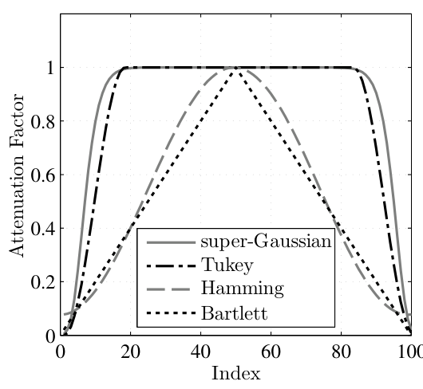
图 8.1 四种数据窗对比：超高斯与图基窗中心是平顶（不碰中心光场）、边缘归零，适合当吸收边界；汉明窗与巴特利特窗从中心就开始往下压，不合格（截自原书）
原书笔误：式 (8.2) 的图基窗不等号印反，还混用了 N 与 L
原书第一分支书印"1，\(r \ge \alpha L/2\)"——平顶跑到网格边缘去了，与图 8.1 直接矛盾，应为 \(r \le \alpha L/2\)；第二分支书印"\(\alpha N/2 \le r/L \le N/2\)"：\(r/L\) 无量纲，\(\alpha N/2\)、\(N/2\) 却是格点数，单位混写。按图 8.1 与标准图基窗定义，应为 \(\alpha L/2 \le r \le L/2\)（\(L = N\delta\) 是网格全宽），余弦母式分母 \((1-\alpha)N/2\) 同理应为 \((1-\alpha)L/2\)。工程 1 的 tukey_absorber 按修正后的定义实现。
吸收边界在文献里出场多次：Flatté 等人在湍流传播研究里用 \(n=8\) 的超高斯模拟平面波；Rubio 把同类超高斯明确当全程吸收边界用，装住发散球面波往外跑的能量；Frehlich 生成大气相位屏时用的是图基窗。还有一个不太"窗"的例子：Martin 与 Flatté 在大气湍流仿真里给随机相位屏加了一个确定性的虚部分量——等效于在对数振幅上乘一个高斯因子，边缘被衰减、中心处消光系数取零、中心场不受影响。
拓展：数据窗 ≠ 吸收边界
数据窗（汉明、汉宁、布莱克曼……）的使命是压制频谱旁瓣：信号只在窗内"活着"，窗从中心往两边压是设计使然。吸收边界的使命是处决撞到网格边的衍射光：感兴趣区域（观察面中心）的光必须原样通过，只有边缘的逃逸能量该死。两者对"中心"的要求相反，所以不能拿数据窗直接当吸收边界用。有限差分光束传播法（FD-BPM）里的"透明边界条件"是同一个问题的另一种解法——都为了不让出射能量从边界弹回来污染场；角谱法不解差分方程，所以用乘窗这个更便宜的办法。
8.2 两次部分传播#
本节把角谱传播跑两遍：第一段从源平面到中间平面（位置在源与观察面之间，不一定在中点），第二段从中间平面到观察平面。吸收边界在第一段传完、中间面上施加。几何见图 8.2，符号见表 8.1。
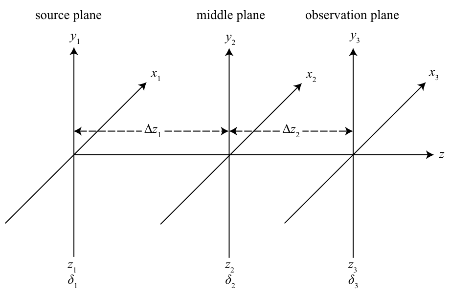
图 8.2 两次部分传播的坐标系：源平面（z₁、δ₁）—中间平面（z₂、δ₂）—观察平面（z₃、δ₃），两段距离 Δz₁、Δz₂（截自原书）
表 8.1 两次部分传播的符号（按原书 Table 8.1 整理）
| 符号 | 含义 |
|---|---|
| \(\mathbf{r}_1=(x_1,y_1)\)、\(\mathbf{r}_2\)、\(\mathbf{r}_3\) | 源 / 中间 / 观察面坐标 |
| \(\delta_1\)、\(\delta_2\)、\(\delta_3\) | 三个平面的网格间距 |
| \(\mathbf{f}_1\)、\(\mathbf{f}_2\)、\(\delta_{f1}\)、\(\delta_{f2}\) | 两平面的空间频率坐标与频域采样间隔 |
| \(\Delta z_1 = z_2 - z_1\)、\(\Delta z_2 = z_3 - z_2\)、\(\Delta z = \Delta z_1 + \Delta z_2\) | 两段距离与总距离 |
| \(\alpha = \Delta z_1/\Delta z\) | 第一段的分数距离 |
| \(m\)、\(m_1\)、\(m_2\) | 总缩放因子与两段各自的缩放因子（\(m_i = \delta_{i+1}/\delta_i\)） |
动手写仿真方程之前，先把符号之间的几何关系算清楚。图 8.3 里 \(A, B\) 是源面网格点（间距 \(\delta_1\)），\(C, D\) 是中间面网格点（间距 \(\delta_2\)），\(E, F\) 是观察面网格点（间距 \(\delta_3\)）。三角形 \(BDH\) 与 \(BFG\) 共享顶点 \(B\)，是相似三角形：
线段 \(FG = (\delta_3-\delta_1)/2\)，\(DH = (\delta_2-\delta_1)/2\)，\(BH = \Delta z_1\)，\(BG = \Delta z = \Delta z_1 + \Delta z_2\)。代入：
人话：中间面的网格间距 = 两端网格间距按位置线性插值。第一段刚开始（\(\alpha \to 0\)）用 \(\delta_1\)，快到观察面（\(\alpha \to 1\)）就用 \(\delta_3\)，全程平滑过渡。式 (8.8) 是整个方法的几何地基。
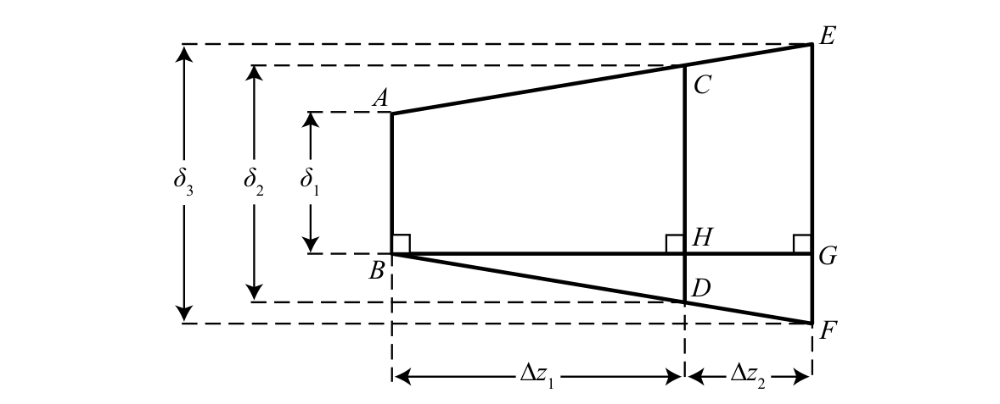
图 8.3 网格间距的相似三角形：由 BDH ∼ BFG 导出 δ₂ = (1−α)δ₁ + αδ₃（截自原书）
现在写两次传播的完整算符链。第 6 章的角谱传播（\(m\) 分支）用两次，中间夹一个吸收边界算符 \(\mathcal{A}[\mathbf{r}_2]\)：
所有二次相位因子与吸收边界都是纯乘性因子，彼此对易——这允许把中间面上挨着的两个二次相位合并掉。合并前要证它们互逆：找 \((1-m_2)/\Delta z_2\) 与 \((m_1-1)/(m_1 \Delta z_1)\) 的关系。把缩放因子 \(m_1 = \delta_2/\delta_1\)、\(m_2 = \delta_3/\delta_2\) 代回式 (8.5)，用 \(\Delta z = \Delta z_1 + \Delta z_2\) 展开再逐步归并：
于是中间面的两个二次相位因子相乘：
化简后的式 (8.16)：
再把因子按"每段一对括号"重排（式 8.17）：
书里明说：这个具体结果不进任何仿真，但它建立了"任意次部分传播"的模式——每个大括号就是一段传播的固定动作。原书没有给两段传播的仿真代码，直接进下一节推广到 \(n\) 个平面。
拓展：中平面两个啁啾为什么恰好互逆
单看式 (8.15) 是代数巧合，背后是第 6 章 \(m\) 分支的算符结构：每段角谱传播在输出面"欠"一个二次相位 \(\mathcal{Q}[(m_i-1)/(m_i \Delta z_i)]\)（要补上才是物理场），在下一段输入面又要"剥掉"一个 \(\mathcal{Q}[(1-m_{i+1})/\Delta z_{i+1}]\)。式 (8.8) 的线性插值恰好让这两个曲率相等——线性插值正是让相邻两段"啁啾账目"无缝衔接的唯一选择。于是链式传播时，中间面保存的场是一个"啁啾被剥掉一层"的中间表示：只有源面要乘 \(\mathcal{Q}_1\)、观察面要乘 \(\mathcal{Q}_3\)，中间什么都不用补。工程 1 的验证 0 数值复核了式 (8.15)：两边相对差 \(0.0\)（浮点位级一致）。
8.3 任意次部分传播#
把两段的模式推广到 \(n\) 个平面、\(n-1\) 次部分传播。先立通用记号（原书 Table 8.2–8.4，这里合并成一张表）：
表 8-2 任意次部分传播的通用记号（按原书 Table 8.2 整理）
| 量 | 定义 | 含义 |
|---|---|---|
| \(n\) / \(n-1\) | — | 平面数 / 部分传播次数 |
| \(\Delta z_i = z_{i+1} - z_i\) | — | 第 \(i\) 段传播距离 |
| \(\alpha_i\) | \(z_i/\Delta z\) | 平面 \(i\) 的分数距离（\(\alpha_1 = 0\)，\(\alpha_n = 1\)） |
| \(m_i\) | \(\delta_{i+1}/\delta_i\) | 从平面 \(i\) 到平面 \(i+1\) 的缩放因子 |
| \(\delta_i\) | \((1-\alpha_i)\,\delta_1 + \alpha_i\,\delta_n\) | 平面 \(i\) 的网格间距（式 8.8 的推广） |
| \(\delta_{fi}\) | \(1/(N \delta_i)\) | 平面 \(i\) 的频域采样间隔 |
原书笔误：表 8.2 把 αᵢ 的描述差了一位
原书 Table 8.2 把 \(\alpha_i = z_i/\Delta z\) 描述成"从平面 1 到平面 i+1 的分数距离"。按 Table 8.3 自己的行（\(\alpha_1 = z_1/\Delta z = 0\) 对应平面 1、\(\alpha_2 = z_2/\Delta z\) 对应平面 2）以及 Listing 8.1 的实现（alpha = z/z(n) 逐平面对应），\(\alpha_i\) 对应平面 \(i\)。公式与代码都自洽，只有表格措辞差一位。
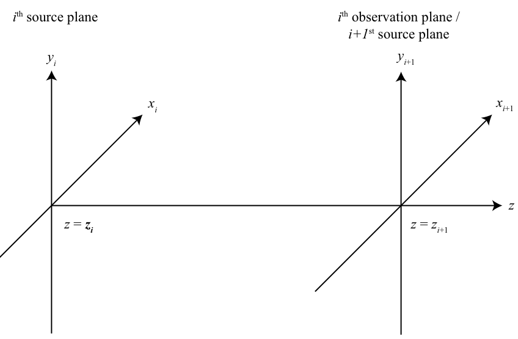
图 8.4 单段部分传播的坐标系：第 i 面既是上一段的观察面、又是下一段的源面，网格间距按线性插值过渡（截自原书）
把式 (8.17) 的模式循环起来，就是任意次部分传播的算符链（式 8.18）：
读法：源面先乘 \(\mathcal{Q}[(1-m_1)/\Delta z_1]\，U(\mathbf{r}_1)\)，然后每段做一遍"缩放 → FT → 频域啁啾 → IFT → 乘吸收边界"，最后观察面补上 \(\mathcal{Q}_3\)。注意连乘号里 \(\mathcal{A}[\mathbf{r}_{i+1}]\) 对每个平面（包括观察面）都出现——而式 (8.16) 的两段版本只在中间面放了 \(\mathcal{A}\)，两处口径不同；观察面感兴趣区域内窗函数 \(\approx 1\)，无实际影响（工程 1 与书 Listing 8.1 都按"每面都乘"实现）。
书 Listing 8.1 是这个算符链的 MATLAB 实现，输入输出：
| 输入 / 输出 | 含义 |
|---|---|
Uin |
\(U(\mathbf{r}_1)\)，源平面光场 [\((\mathrm{W/m^2})^{1/2}\)] |
wvl |
光波长 [m] |
delta1 / deltan |
源 / 观察面网格间距 [m] |
z |
平面位置数组 \([z_2, z_3, \ldots, z_n]\)（不含 \(z_1=0\)）[m] |
xn, yn, Uout |
观察面坐标与光场 |
function [xn yn Uout] = ang_spec_multi_prop_vac ...
(Uin, wvl, delta1, deltan, z)
% function [xn yn Uout] = ang_spec_multi_prop_vac ...
% (Uin, wvl, delta1, deltan, z)
%
% 任意次部分传播的角谱法（书 Listing 8.1 原样整理，中文注释为笔记所加）。
% Uin : U(r1)，源平面光场 [(W/m^2)^(1/2)]
% wvl : 光波长 [m]
% delta1 : delta_1，源平面网格间距 [m]
% deltan : delta_n，观察平面网格间距 [m]
% z : 平面位置数组 [z2, z3, ..., zn]（不含 z1=0）[m]
% 输出 xn/yn/Uout：观察面坐标与 U(rn)。
% 依赖：ft2（书 Listing 2.5）、ift2（书 Listing 2.6）。
N = size(Uin, 1); % number of grid points
[nx ny] = meshgrid((-N/2 : 1 : N/2 - 1));
k = 2*pi/wvl; % optical wavevector
% super-Gaussian absorbing boundary（式 8.1 的 n=16、sigma=0.47L）
nsq = nx.^2 + ny.^2;
w = 0.47*N;
sg = exp(-nsq.^8/w^16); clear(nsq, w);
z = [0 z]; % propagation plane locations（补上 z1=0）
n = length(z);
% propagation distances：Delta_z(i) = z(i+1) - z(i)
Delta_z = z(2:n) - z(1:n-1);
% grid spacings：alpha_i = z_i/z_n（式 8.8 的线性插值权重）
alpha = z / z(n);
delta = (1-alpha) * delta1 + alpha * deltan;
m = delta(2:n) ./ delta(1:n-1); % 缩放因子 m_i = delta_{i+1}/delta_i
x1 = nx * delta(1);
y1 = ny * delta(1);
r1sq = x1.^2 + y1.^2;
Q1 = exp(i*k/2*(1-m(1))/Delta_z(1)*r1sq); % 源面二次相位（只乘这一次）
Uin = Uin .* Q1;
for idx = 1 : n-1
% spatial frequencies (of i^th plane)
deltaf = 1 / (N*delta(idx));
fX = nx * deltaf;
fY = ny * deltaf;
fsq = fX.^2 + fY.^2;
Z = Delta_z(idx); % propagation distance
% quadratic phase factor：Q2[-Delta_z_i/m_i]（频域啁啾）
Q2 = exp(-i*pi^2*2*Z/m(idx)/k*fsq);
% compute the propagated field：缩放 -> FT -> 频域啁啾 -> IFT -> 乘吸收边界
Uin = sg .* ift2(Q2 ...
.* ft2(Uin / m(idx), delta(idx)), deltaf);
end
% observation-plane coordinates
xn = nx * delta(n);
yn = ny * delta(n);
rnsq = xn.^2 + yn.^2;
% 循环结束后 Z 恰为最后一段 Delta_z(n-1)（书代码同款写法，见坑与陷阱 5）
Q3 = exp(i*k/2*(m(n-1)-1)/(m(n-1)*Z)*rnsq);
Uout = Q3 .* Uin;
# ang_spec_multi_prop_vac（书 Listing 8.1 的 Python 等价实现，工程 1 摘录）
# Uin : U(r1)，源平面光场 [(W/m^2)^(1/2)]
# wvl : 光波长 [m]
# delta1 : 源平面网格间距 [m]
# deltan : 观察平面网格间距 [m]
# z : 平面位置数组 [z2, ..., zn]（不含 z1=0）[m]
# 依赖：ft2_centered（书 Listing 2.5 等价）、ift2（书 Listing 2.6 等价，见下）。
# 与 MATLAB 版差异：numpy 0-based（零坐标样本在 N//2）；nsq**8 必须用
# 浮点（Windows numpy 默认 int32，8192**8 会整数溢出回绕，窗静默失效）。
def ift2(G, delta_f):
"""原书 Listing 2.6：定标正确的二维逆 DFT（乘 (N*delta_f)^2）。"""
N = G.shape[0]
return np.fft.fftshift(np.fft.ifft2(np.fft.fftshift(G))) * (N * delta_f) ** 2
def super_gaussian_absorber(N, w_frac=0.47, order=16):
"""super-Gaussian 吸收边界（书第 10-12 行的函数化，式 8.1 的 n=16）。"""
n = (np.arange(N) - N // 2).astype(float) # 索引转 float，防 int 溢出
nx, ny = np.meshgrid(n, n)
nsq = nx ** 2 + ny ** 2
w = w_frac * N
return np.exp(-nsq ** (order // 2) / w ** order)
def ang_spec_multi_prop_vac(Uin, wvl, delta1, deltan, z):
N = Uin.shape[0] # number of grid points
n = np.arange(N) - N // 2 # 书：nx = -N/2 : N/2-1（1-based）
nx, ny = np.meshgrid(n, n)
k = 2.0 * np.pi / wvl # optical wavevector
# super-Gaussian absorbing boundary（书第 9-12 行）
sg = super_gaussian_absorber(N)
z = np.concatenate(([0.0], np.asarray(z, dtype=float))) # 书：z = [0 z]
n_planes = len(z)
Delta_z = z[1:] - z[:-1] # propagation distances
alpha = z / z[-1] # fractional distances（alpha_i = z_i/Dz）
delta = (1.0 - alpha) * delta1 + alpha * deltan # 式 (8.8)
m = delta[1:] / delta[:-1] # scaling factors m_i
x1 = nx * delta[0]
y1 = ny * delta[0]
r1sq = x1 ** 2 + y1 ** 2
Q1 = np.exp(1j * k / 2.0 * (1.0 - m[0]) / Delta_z[0] * r1sq)
Uin = Uin * Q1
for idx in range(n_planes - 1): # 书：for idx = 1 : n-1
# spatial frequencies (of i-th plane)
deltaf = 1.0 / (N * delta[idx])
fX = nx * deltaf
fY = ny * deltaf
fsq = fX ** 2 + fY ** 2
Z = Delta_z[idx] # propagation distance
# quadratic phase factor（式 8.18 的 Q2[-Delta_z_i/m_i]，负号对照原书）
Q2 = np.exp(-1j * np.pi ** 2 * 2.0 * Z / m[idx] / k * fsq)
# compute the propagated field（含 A[r_{i+1}] 吸收边界，按式 8.18）
Uin = sg * ift2(Q2 * ft2(Uin / m[idx], delta[idx]), deltaf)
# observation-plane coordinates
xn = nx * delta[-1]
yn = ny * delta[-1]
rnsq = xn ** 2 + yn ** 2
# 循环结束后 Z 恰为最后一段 Delta_z(n-1)（书代码同款写法）
Q3 = np.exp(1j * k / 2.0 * (m[-1] - 1.0) / (m[-1] * Z) * rnsq)
Uout = Q3 * Uin
return xn, yn, Uout
逐行看门道（行号按原书 Listing 8.1）：
- 第 10–12 行构造超高斯吸收边界：
sg = exp(-nsq.^8 / w^16)，w = 0.47*N——这就是式 (8.1) 的 \(n=16\)、\(\sigma = 0.47\,N\delta = 0.47 L\)，与图 8.1 的 \(\sigma=0.45L\) 同量级； - 第 14–21 行把总距离翻成逐段量：
z = [0 z]、Delta_z、alpha = z/z(n)、delta = (1-alpha)*delta1 + alpha*deltan（式 8.8）、m = delta(2:n)./delta(1:n-1)； - 第 26–27 行只在源面乘一次 \(\mathcal{Q}_1\)；
- 循环体内（第 28–40 行）每段做
ift2(Q2 .* ft2(Uin/m, delta), deltaf)再乘sg——吸收边界每个平面都乘（含观察面）； - 第 42–46 行补观察面啁啾 \(\mathcal{Q}_3\)。注意
Q3用了循环变量Z——循环结束后它恰好等于最后一段距离，这是原书的写法，自己改循环边界时要小心（见坑与陷阱）。
Python 版的差异都写进注释：0-based 索引（零坐标样本在 N//2）、ft2/ift2 的归一化、以及一个 Windows 专属坑——nsq ** 8 在 numpy 默认 int32 下会整数溢出回绕，必须先转 float（MATLAB 全 double 没这个问题）。
各平面场上到底发生了什么？工程 1 把 Listing 8.2 书例的 5 个平面全部录了下来：
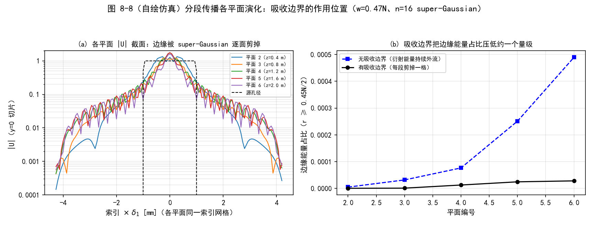
图 8-8（自绘仿真）分段传播各平面演化（书例参数，5 段、每段 0.4 m）：(a) 各平面 |U| 的 y=0 切片——方孔衍射逐面展开、边缘被超高斯窗逐段剪掉；(b) 边缘能量占比（r ≥ 0.45N/2）：无吸收边界时随平面数持续增长（衍射能量外流），有吸收边界时被压低约一个量级、几乎不动
8.4 多次部分传播的采样#
平面一多，第 7 章的四条约束要重新过一遍。约束 1 与约束 2 是纯几何的（观测孔径的物理带宽、网格装不装得下卷绕），跟传播方法无关，原样沿用，只是把 \(\delta_2\) 换成 \(\delta_n\)：
- \(\displaystyle \delta_n \le \frac{\lambda \Delta z - D_2 \delta_1}{D_1}\)（约束 1，即式 7.14）；
- \(\displaystyle N \ge \frac{D_1}{2\delta_1} + \frac{D_2}{2\delta_n} + \frac{\lambda \Delta z}{2\delta_1 \delta_n}\)（约束 2，即式 7.20）。
约束 3 麻烦在 \(\delta_i\)、\(\Delta z_i\) 逐段都变。按第 7 章的套路，设源是球面波前（半径 \(R\)），第一段 FT 前的"源相位 + 网格啁啾"合计为
对第一段套 Nyquist 判据（与式 7.48–7.53 同样的推导）：
现在代入 \(\delta_2 = (1-\alpha_2)\delta_1 + \alpha_2 \delta_n\) 和 \(\Delta z_1 = \alpha_2 \Delta z\)：
乘开、合并同类项、两边除以 \(\alpha_2\)（\(\alpha_2 > 0\)），\(\alpha_2\) 严格消去：
与式 (7.53) 一字不差——约束 3 与分段数无关，\(\delta_2\)、\(\Delta z_1\) 这些部分传播量在推导里全部消失（习题 2 要求补全的正是这四行代数）。工程 1 用 1000 组随机参数复核：式 (8.20)（对 \(\delta_2\)）与式 (8.22)（对 \(\delta_n\)）的判定不一致组数为 0。
约束 4 才是真正要按段改写的。第 \(i\) 段一条：
\(n-1\) 条不等式、参数空间随 \(n\) 胀——把 \(\delta_i\) 全用 \(\delta_1,\delta_n\) 表示也只是换成 \(\alpha_i\)（依赖 \(z_i\)），维度降不下来。而且"取右端最大的那段"需要先知道所有 \(\Delta z_i\)、\(\delta_i\)——这正是你还没定下来的量，鸡生蛋。
换个角度：不管网格扩张还是收缩，\(\delta_1\) 与 \(\delta_n\) 中较小的一个不大于任何 \(\delta_i\)、\(\delta_{i+1}\)。对给定的 \(\Delta z_i\)，用 \(\min(\delta_1, \delta_n)\) 替换式 (8.23) 里的 \(\delta_i, \delta_{i+1}\)，得到一条充分约束；再把 \(N\) 已定的事实翻过来，写成对段距的限制：
右端就是单段最大传播距离 \(\Delta z_{max}\)。因此至少要
个平面（\(n-1\) 次部分传播，ceil 是向上取整）。
原书笔误：'n = ceil(Δz/Δzmax)+1 次部分传播'数的是平面
按第 8.3 节的约定，\(n\) 是平面数、\(n-1\) 才是部分传播次数。书例里 \(n=5\) 被正文读成"至少 5 次部分传播"，其实最少需要 4 次传播（每段 0.5 m \(\le\) 0.569 m，5 个平面）；Listing 8.2 干脆取 5 次传播（每段 0.4 m）——"可以多用部分传播"没错，但正文句尾的"partial propagations"与式中的 \(n\) 不是同一个计数。
于是选参流程清晰了（原书三步）：
- 先定 \(N\)、\(\delta_1\)、\(\delta_n\)：用前两条约束（约束 3 按式 8.22 免检即可）；
- 再用式 (8.24) 定 \(\Delta z_{max}\) 与最少分段数（\(n-1\) 次传播）；
- 分段只多不少：更短的段距天然仍满足约束 4。
原书本章末尾用这个方法做了一个完整书例：均匀振幅平面波（\(R = \infty\)）离开源面的方孔。\(D_1 = 2\) mm、\(\lambda = 1\,\mu\)m、观察面在 \(\Delta z = 2\) m。要求源孔径与观察面感兴趣区内都至少 30 个网格点，取终稿参数 \(D_2 = 6\) mm（Listing 8.2）得 \(\delta_1 = D_1/30 \approx 66.7\,\mu\)m、\(\delta_n = D_2/30 = 200\,\mu\)m。图 8.5 画了约束 2 的 \(\log_2 N\) 等高线并叠上约束 1：按终稿口径，约束 2 需要 \(N \ge 105 = 2^{6.71}\)，向上取 2 的幂得 \(N = 128\)；约束 1 给 \(\delta_n \le 800\,\mu\)m，余量很大。
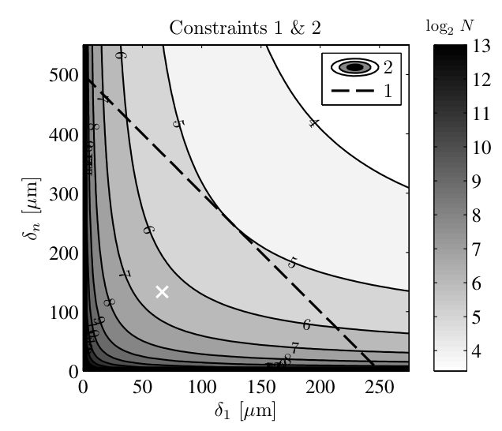
图 8.5 采样约束分析：约束 2 的 log₂N 等高线 + 约束 1（虚线），白叉标记"30 点跨源孔径与观察孔径"对应的网格间距（截自原书）
最后用约束 4 收尾（\(\delta_1 = 66.7\,\mu\)m、\(\delta_n = 200\,\mu\)m、\(N = 128\)）：
（书印 0.567 m，尾数舍入。）于是至少 \(n = \operatorname{ceil}(2/0.569) + 1 = 5\) 个平面——最少 4 次部分传播；Listing 8.2 取了 5 次（每段 0.4 m）。注意单次传播在此参数下约束 4 要 \(N \ge 150 > 128\)：分段不是可选项，是必需品。仿真结果与解析对照（图 8.6）：感兴趣区域内辐照度与相位都贴得很近——解析峰值辐照度 2.56（书图读数 2.57）、第一暗环在 1.0 mm，工程 1 复现的 ROI 误差 \(|\Delta I|/\)峰值 \(= 3.9\times10^{-3}\)、相位残差 \(4.8\times10^{-3}\) rad。
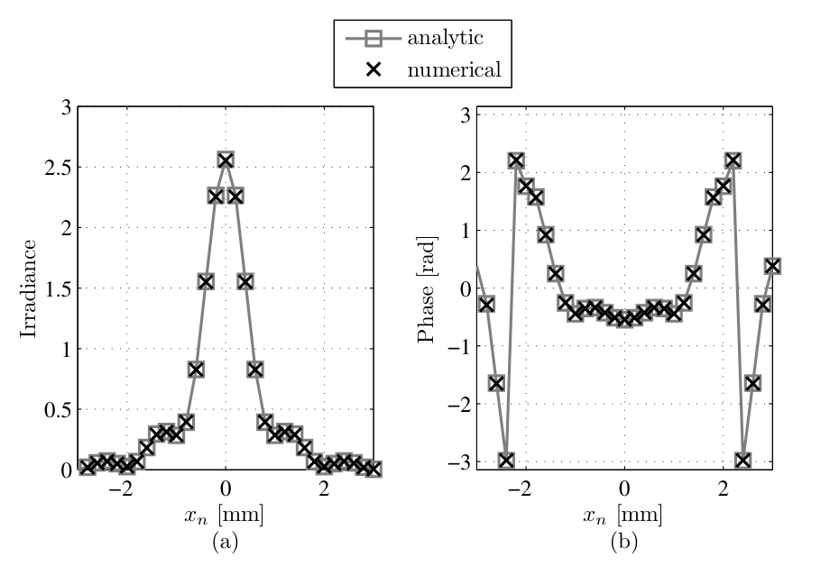
图 8.6 观察面感兴趣区内的仿真 vs 解析：(a) 辐照度（峰值约 2.57）；(b) 缠绕相位（中央近平、暗环处 π 跳变）。数值点与解析曲线重合（截自原书）
拓展：图 8.6 峰值为什么是 2.57
书例的菲涅耳数 \(N_F = D_1^2/(\lambda \Delta z) = 2\)，处于"近场振荡区"——轴上辐照度不再是 1。把方孔菲涅耳积分的轴上值配方（代换 \(t = x_1\sqrt{2/(\lambda \Delta z)}\)，积分限走到 \(\pm\sqrt{N_F/2} = \pm 1\)），得 \(|U(0)|^2 = \tfrac{1}{4}\left|2\left[C(1) + iS(1)\right]\right|^4 = \tfrac{1}{4}\times 3.202^2 \approx 2.56\)（\(C(1)=0.780\)、\(S(1)=0.438\) 是 Fresnel 积分），与书图峰值 2.57 一致。相位图中央近平也是解析的必然：平面波源的配方相位恰好与观察面啁啾相消，剩下的只有暗环两侧的 \(\pi\) 跳变。
原书笔误：书例参数三处打架（133 µm vs 200 µm）
书例的参数在正文、图、Listing 之间对不上，需要分辨哪套是终稿： - 正文写"30 点跨 \(D_1\) 与 \(D_2\)，得 \(\delta_1 \le 66.7\,\mu\)m、\(\delta_n \le 133\,\mu\)m"，并按 \(\delta_n = 133\,\mu\)m 与 \(N=128\) 用约束 4 算出式 (8.25)。但 \(133\,\mu\)m \(= D_2/30\) 意味着 \(D_2 = 4\) mm；Listing 8.2 写的却是 \(D_2 = 6\) mm、\(\delta_n = D_2/30 = 200\,\mu\)m。 - 图 8.5 整张按旧稿参数绘制：约束 1 虚线在 \(\delta_1 = 0\) 处的截距 500 µm \(= \lambda \times (1\,\mathrm{m})/D_1\)（即 \(\Delta z = 1\) m，不是正文的 2 m），虚线在 \(\delta_1 \approx 250\,\mu\)m 处触零（斜率 \(-2 = -D_2/D_1\)，即 \(D_2 = 4\) mm）；白叉实测位于 \((66.0, 132.7)\,\mu\)m。白叉处旧稿口径 \(\log_2 N = 6.43\)（\(N \ge 87\)，向上取 2 的幂 = 128），与正文"at least \(N = 2^7 = 128\)"自洽；若按正文混合口径（\(\delta_n = 133\,\mu\)m、\(\Delta z = 2\) m），约束 2 要求 \(N \ge 143\)，\(N = 128\) 不成立。 - 图 8.6 数值标记的间距约 0.13 mm（\(\pm 2\) mm 内约 30 个点），对应 \(\delta_n = 133\,\mu\)m 而非 200 µm。 - 数值自洽的一套是 Listing 8.2（\(\delta_n = 200\,\mu\)m、\(\Delta z = 2\) m）：约束 2 需 \(N \ge 105\)（满足）、单次约束 4 需 \(N \ge 150\)（分段确实必要）。本笔记与工程 1 以 Listing 8.2 为准复现，另附 133 µm 口径的对照（约束 2 被突破 143 vs 128，但卷绕污染温和，ROI 内 \(|\Delta I|/\)峰值 \(= 4.3\times10^{-3}\)，仍大致可用——约束是指导线不是铁律的又一例证）。
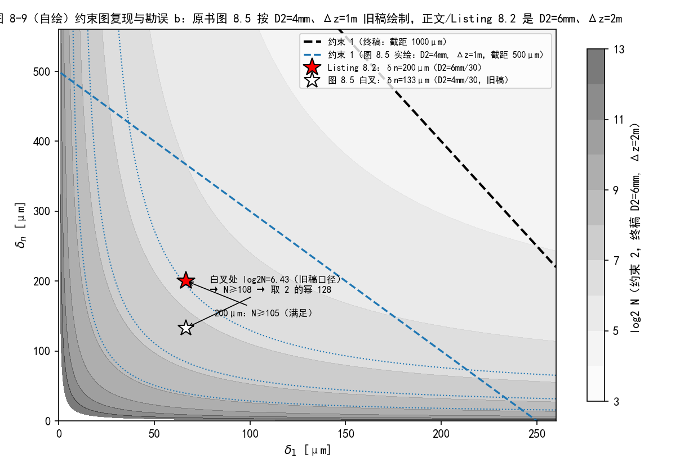
图 8-9（自绘）约束图复现与勘误取证：灰度为终稿口径（D₂=6mm、Δz=2m）的约束 2 log₂N 等高线，蓝点线为图 8.5 实绘的旧稿口径（D₂=4mm、Δz=1m）；黑虚线是终稿约束 1（截距 1000 µm，出图范围外）、蓝虚线是图 8.5 实绘约束 1（截距 500 µm）；红星 = Listing 8.2 的 (66.7, 200) µm，白星 = 图 8.5 白叉实测 (66.0, 132.7) µm
部分传播 + 吸收边界到底解决了什么？书例参数下把总距离拉到 \(\Delta z = 8\) m 做对照：单次传播（无吸收边界）违反约束 4（需 \(N \ge 600\)）也违反约束 2（需 \(N \ge 330\)），网格边缘的卷绕伪影成片爬进 ROI，误差 \(|\Delta I|/\)峰值 \(= 1.1\times10^{-1}\)；拆成 20 段（每段 0.4 m，每段约束 4 只需 \(N \ge 82\)）加超高斯吸收边界后误差降到 \(8.2\times10^{-3}\)——差 14 倍。这就是本章方法的存在意义。
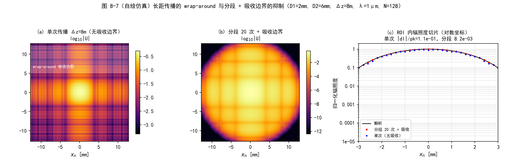
图 8-7（自绘仿真）长距传播的 wrap-around 与分段 + 吸收边界的抑制（D₁=2mm、D₂=6mm、Δz=8m、λ=1µm、N=128）：(a) 单次传播的对数辐照度——网格边缘的卷绕伪影成片；(b) 分段 20 次 + 吸收边界——干净；© ROI 内辐照度切片（对数坐标）：单次的伪影抬高背景约两个量级
书例的完整仿真就是 Listing 8.2 这十几行：
% example_square_prop_ang_spec_multi.m（书 Listing 8.2 原样整理，中文注释为笔记所加）
D1 = 2e-3; % diameter of the source aperture [m]
D2 = 6e-3; % diameter of the observation aperture [m]（终稿口径）
wvl = 1e-6; % optical wavelength [m]
k = 2*pi / wvl; % optical wavenumber [rad/m]
z = 2; % propagation distance [m]
delta1 = D1/30; % source-plane grid spacing [m]（30 点跨源孔径）
deltan = D2/30; % observation-plane grid spacing [m]（30 点跨观察孔径）
N = 128; % number of grid points
n = 5; % number of partial propagations
% switch from total distance to individual distances：平面位置 [0.4 0.8 1.2 1.6 2]
z = (1:n) * z / n;
% source-plane coordinates
[x1 y1] = meshgrid((-N/2 : N/2-1) * delta1);
ap = rect(x1/D1) .* rect(y1/D1); % source aperture
[x2 y2 Uout] = ...
ang_spec_multi_prop_vac(ap, wvl, delta1, deltan, z);
% analytic result for y2=0 slice（MATLAB 1-based：零坐标在第 N/2+1 行）
Dz = z(end); % switch back to total distance
Uout_an ...
= fresnel_prop_square_ap(x2(N/2+1,:), 0, D1, wvl, Dz);
# example_square_prop_ang_spec_multi（书 Listing 8.2 的 Python 等价，工程 1 摘录）
# ang_spec_multi_prop_vac / fresnel_prop_square_ap / rect：
# 前者见上方 Listing 8.1 的 Python 版；后两者见第 6 章笔记工程 1。
import numpy as np
D1, D2 = 2e-3, 6e-3 # 源孔径 / 观察孔径直径 [m]（终稿口径）
wvl = 1e-6 # 光波长 [m]
z_tot = 2.0 # 传播距离 [m]
delta1 = D1 / 30 # 源面网格间距（30 点跨源孔径）
deltan = D2 / 30 # 观察面网格间距（30 点跨观察孔径）
N = 128 # 网格点数
nseg = 5 # 部分传播次数
z = (np.arange(1, nseg + 1)) * z_tot / nseg # 平面位置 [0.4 0.8 1.2 1.6 2]
n = np.arange(N) - N // 2 # numpy 0-based：零坐标样本在 N//2
x1, y1 = np.meshgrid(n * delta1, n * delta1)
ap = rect(x1 / D1) * rect(y1 / D1) # 源方孔
xn, yn, Uout = ang_spec_multi_prop_vac(ap, wvl, delta1, deltan, z)
# 解析对照：y=0 切片（numpy 0-based：第 N//2 行）
Uout_an = fresnel_prop_square_ap(xn[N // 2, :], 0.0, D1, wvl, z_tot)
拓展：多分段为什么"通常反而更快"
直觉上"跑 5 次当然比跑 1 次慢"，但账不是这么算的：二维 FFT 的代价 \(\propto N^2 \log_2 N\)，而约束 4 把单次传播需要的 \(N\) 顶得更高。书例 \(\Delta z = 2\) m：单次要 \(N = 256\)（两次 \(256^2\cdot 8\) 的变换）对分段 5 次 \(N = 128\)（十次 \(128^2\cdot 7\)）——基本打平；\(\Delta z = 8\) m 的对照里差距才拉开：单次要 \(N = 1024\)（\(2\times 1024^2\cdot 10 \approx 2.1\times 10^7\)），分段 20 次 \(N=128\) 只需 \(40 \times 128^2\cdot 7 \approx 4.7\times 10^6\)——快 4 倍半。\(N\) 进平方项，段数只进线性项，距离越长分段越划算。
工程 1：书例复现与约束落地（Listings 8.1–8.2）#
对应文件 matlab/waveprop/ch8/ch8_partial_prop.m 与 python/waveprop/ch8/ch8_partial_prop.py：窗函数、几何关系、四条约束、Listing 8.1 的函数化实现、书例复现（终稿 + 133 µm 对照）、wrap-around 对照与各平面演化（复用第 6 章 ang_spec_prop/fresnel_prop_square_ap 与公共 base.py）：
%% ===== 书 Schmidt PM199 第 8 章（工程 1）：用部分传播放宽采样约束 =====
% 原书 8.1-8.4 节（吸收边界、两次/任意次部分传播、采样约束），
% 书 Listing 8.1 / 8.2 原样整理 + 中文注释。
% 与 python/waveprop/ch8/ch8_partial_prop.py 数值行为一致；
% 本机无 MATLAB 时以 Python 实跑结果为准。
%
% 原书要点：
% 角谱法只适合短距离：约束 4（N >= lambda*Dz/(delta1*delta2)，式 7.59）
% 随 Dz 线性变紧。解法：把全长传播拆成 n-1 次"部分传播"（n 个平面），
% 每段用角谱法，并在每个平面乘吸收边界压掉网格边缘能量、抑制 wrap-around：
% - 吸收边界（8.1 节）：super-Gaussian（式 8.1）或 Tukey/余弦锥削窗
% （式 8.2），中心 ~1、边缘 ~0；Hamming/Bartlett 中心也被压低，不适用。
% - 网格间距沿 z 线性插值（式 8.8）：delta_i = (1-alpha_i)*delta1 + alpha_i*deltan，
% alpha_i = z_i/Dz（相似三角形，图 8.3）。
% - 中平面两个二次相位恰好互逆抵消（式 8.15），得干净算符链（式 8.16-8.18）。
% - 采样约束（8.4 节）：约束 1/2 原样；约束 3 与分段数无关（式 8.22 ==
% 式 7.53，alpha 消去，习题 2）；约束 4 按段改写：
% Delta_z_i <= min(delta1,deltan)^2*N/lambda（式 8.24），定出最少平面数。
% 书例（Listing 8.2，终稿参数）：方孔平面波 D1=2mm、lambda=1um、Dz=2m、
% N=128、delta1=D1/30=66.7um、deltan=D2/30=200um、5 次部分传播（每段 0.4m）。
%
% 原书笔误/不一致（Python 侧数值 + 图面取证，详见笔记对应 warning）：
% (a) 式 (8.2) Tukey 窗第一分支书印 "1, r >= alpha*L/2"：不等号印反
% （平顶应在中心，与图 8.1 矛盾），且 r/L 与 alpha*N/2、N/2 单位混用；
% 按图 8.1 与标准 Tukey 定义实现（平顶 + 锥形）。
% (b) 书例参数三处不一致：正文 delta_n<=133um（D2=4mm/30 来）vs
% Listing 8.2 的 D2=6mm、deltan=200um；图 8.5 整张按旧稿 D2=4mm、
% Dz=1m 绘制（约束 1 虚线截距 500um = lambda*1m/D1、斜率 -2 = -D2/D1，
% 白叉实测 (66.0,132.7)um 处旧稿口径 log2N=6.43 -> N>=87 -> 取 2 的幂
% 128，与正文"at least N=2^7=128"自洽）；图 8.6 标记间距 ~0.13mm 对应
% 133um。数值自洽的一套是 Listing 8.2（约束 2 需 N>=105；单次约束 4
% 需 N>=150，分段确实必要）；正文 133um 与 Dz=2m 组合违反约束 2
% （N>=143）。以 Listing 8.2 为准复现。
% (c) "至少 n = ceil(Dz/Dzmax)+1 次部分传播"的计数口径：n 按表 8.2 是
% 平面数（n-1 次传播），书例最少 4 次传播；Listing 8.2 取 5 次
% （每段 0.4m），比下限多一段、更稳妥。
% (d) 式 (8.16)（两次分段）只在中平面放 A[r2]，而式 (8.18)/Listing 8.1
% 在每个平面（含观察面）都乘吸收边界 —— 代码按式 (8.18) 实现。
% (e) 表 8.2 把 alpha_i = z_i/Dz 描述成 "fractional distance from plane 1
% to plane i+1"：按表 8.3 与 Listing 8.1，alpha_i 对应平面 i，措辞差一。
%
% Python 实跑结果（本脚本按相同参数复现）：
% 验证 0：式 (8.15) 两中平面啁啾相对差 0.0；式 (8.20)/(8.22) 1000 组随机
% 参数判定 0 不一致（约束 3 与分段数无关）。
% 验证 1：n=1 单段（无吸收边界）与第 6 章 ang_spec_prop 最大复数差 0.0。
% 验证 2：Listing 8.2 复现，解析峰值 2.56（书图 8.6 峰值 2.57）、
% 第一暗环 1.00mm，ROI(+-3mm) 内 |dI|/pk = 3.9e-3、
% 相位残差 4.8e-3 rad；
% 正文 133um 口径 |dI|/pk = 4.3e-3（约束 2 突破仍大致可用）。
% 验证 4：Dz=8m 单次传播 ROI |dI|/pk = 1.12e-1，分段 20 次+吸收边界
% 8.2e-3 —— 差 14 倍（wrap-around 被抑制）。
%
% MATLAB/Python 差异（对应 .py 内注释）：
% - MATLAB 1-based（零坐标样本在 N/2+1 行）/ numpy 0-based（N//2 行）；
% - MATLAB 全 double，无 int 溢出问题；numpy 侧 nsq.^8 必须转 float
% （Windows int32 溢出坑，见 .py 的 super_gaussian_absorber 注释）；
% - meshgrid/ft2/ift2 约定与书 Listing 2.5/2.6 一致。
clear; clc; close all;
%% ================= 验证 0：几何关系与 alpha 消去（式 8.8 / 8.15 / 习题 2） =====
fprintf('===== 验证 0：式 (8.8) 网格插值 / 式 (8.15) 相位抵消 / 式 (8.21)->(8.22) =====\n');
d1 = 66.7e-6; d3 = 200e-6; a1 = 0.3;
d2 = delta_middle(d1, d3, a1); % 式 (8.8)
fprintf(' 式 (8.8)：delta1=66.7um, delta3=200um, alpha=0.3 -> delta2 = %.4f um\n', d2*1e6);
[lhs, rhs] = middle_chirp_cancels(d1, d3, 0.6, 1.4); % 式 (8.15)
fprintf(' 式 (8.15)：(m2-1)/Dz2 = %.6e 与 (m1-1)/(m1*Dz1) = %.6e，相对差 %.1e\n', ...
lhs, rhs, abs(lhs-rhs)/abs(rhs));
% 式 (8.21)->(8.22)：约束 3 的 alpha_2 消去（随机参数验证）
rng(8, 'twister');
mism = 0;
for it = 1:1000
d1r = 10^(-5 + 2*rand);
dnr = 10^(-5 + 2*rand);
Dzr = 10^(-1 + 6*rand);
Rr = 10^(-1 + 4*rand) * sign(rand - 0.5);
wvlr = 10^(-7 + 2*rand);
D1r = 10^(-3 + 2*rand);
a2 = 0.05 + 0.9*rand;
Dz1 = a2 * Dzr;
d2r = (1 - a2)*d1r + a2*dnr;
lo2 = (1 + Dz1/Rr)*d1r - wvlr*Dz1/D1r; % 式 (8.20) 对 delta2
hi2 = (1 + Dz1/Rr)*d1r + wvlr*Dz1/D1r;
ok2 = (lo2 <= d2r) && (d2r <= hi2);
lon = (1 + Dzr/Rr)*d1r - wvlr*Dzr/D1r; % 式 (8.22) 对 deltan
hin = (1 + Dzr/Rr)*d1r + wvlr*Dzr/D1r;
okn = (lon <= dnr) && (dnr <= hin);
if ok2 ~= okn
mism = mism + 1;
end
end
fprintf(' 1000 组随机参数：式 (8.20)（对 delta2）与式 (8.22)（对 deltan）判定不一致 = %d 组\n', mism);
%% ================= 验证 2：Listing 8.2 书例复现（原书图 8.6） =================
fprintf('===== 验证 2：Listing 8.2 复现（方孔平面波，N=128，5 段传播） =====\n');
D1 = 2e-3; % diameter of the source aperture [m]
D2 = 6e-3; % diameter of the observation aperture [m]
wvl = 1e-6; % optical wavelength [m]
z_tot = 2; % propagation distance [m]
delta1 = D1/30; % source-plane grid spacing [m]（30 点跨孔径）
deltan = D2/30; % observation-plane grid spacing [m]（勘误 b：书正文 133um）
N = 128; % number of grid points
nseg = 5; % number of partial propagations
z = (1:nseg) * z_tot / nseg; % switch from total distance to segments
[x1g y1g] = meshgrid((-N/2 : N/2-1) * delta1);
ap = rect(x1g/D1) .* rect(y1g/D1); % source aperture
[xn yn Uout] = ang_spec_multi_prop_vac(ap, wvl, delta1, deltan, z);
% analytic result for y=0 slice（MATLAB 1-based：零坐标在第 N/2+1 行）
Uan = fresnel_prop_square_ap(xn(N/2+1,:), 0, D1, wvl, z_tot);
win = abs(xn(N/2+1,:)) <= D2/2;
I_num = abs(Uout(N/2+1,:)).^2; I_an = abs(Uan).^2; pk = max(I_an);
eI = max(abs(I_num(win) - I_an(win)))/pk;
mph = win & (I_an > 0.05*pk);
eph = max(abs(angle(Uout(N/2+1,mph)./Uan(mph))));
fprintf(' delta1=%.2f um, deltan=%.2f um, N=%d, 段长 %.2f m x %d\n', ...
delta1*1e6, deltan*1e6, N, z(1), nseg);
fprintf(' 解析峰值辐照度 = %.2f（原书图 8.6 峰值 2.57）\n', pk);
fprintf(' ROI 内：|dI|/峰值 = %.2e；相位残差(|U|>5%%峰值) = %.2e rad\n', eI, eph);
% 正文口径（delta_n=133um）同样跑一遍：约束 2 被突破的后果
[xn1, ~, Uout133] = ang_spec_multi_prop_vac(ap, wvl, delta1, 133e-6, z);
Uan133 = fresnel_prop_square_ap(xn1(N/2+1,:), 0, D1, wvl, z_tot);
winb = abs(xn1(N/2+1,:)) <= 2e-3;
eI133 = max(abs(abs(Uout133(N/2+1,winb)).^2 - abs(Uan133(winb)).^2)) / max(abs(Uan133).^2);
mphb = winb & (abs(Uan133).^2 > 0.05*max(abs(Uan133).^2));
eph133 = max(abs(angle(Uout133(N/2+1,mphb)./Uan133(mphb))));
fprintf(' [正文口径 deltan=133um] +-2mm 内：|dI|/峰值 = %.2e；相位残差 = %.2e rad\n', eI133, eph133);
%% ================= 验证 3：采样约束总账 + 勘误 b 取证 =================
fprintf('===== 验证 3：书例采样约束 + 勘误 b（图 8.5 旧稿 / 正文 133um / Listing 200um）=====\n');
fprintf(' 约束 1（D2=6mm, Dz=2m）：delta_n <= %.0f um（200um 满足）\n', ...
constraint1_d2(delta1, D1, D2, wvl, z_tot)*1e6);
fprintf(' 约束 2（deltan=200um, Dz=2m）：N >= %.1f = 2^%.2f -> N=128 成立\n', ...
constraint2_N(delta1, 200e-6, D1, D2, wvl, z_tot), ...
log2(constraint2_N(delta1, 200e-6, D1, D2, wvl, z_tot)));
fprintf(' 约束 2（deltan=133um, D2=4mm, Dz=2m，正文口径）：N >= %.1f -> N=128 不成立\n', ...
constraint2_N(delta1, 133e-6, D1, 4e-3, wvl, z_tot));
fprintf(' 约束 2（deltan=133um, D2=4mm, Dz=1m，图 8.5 旧稿口径）：N >= %.1f = 2^%.2f -> N=128 成立\n', ...
constraint2_N(delta1, 133e-6, D1, 4e-3, wvl, 1.0), ...
log2(constraint2_N(delta1, 133e-6, D1, 4e-3, wvl, 1.0)));
[lo3, hi3] = constraint3_d2(delta1, D1, wvl, z_tot, inf);
fprintf(' 约束 3（R=inf）：%.0f <= delta_n <= %.0f um（|1+Dz/R|=1 < D2/D1=3，免检）\n', ...
lo3*1e6, hi3*1e6);
fprintf(' 约束 4（单次，deltan=200um）：N >= %.1f > 128 -> 必须分段\n', ...
wvl*z_tot/(delta1*deltan));
fprintf(' [图 8.5 取证] 白叉实测 (66.0, 132.7) um；虚线截距 500um=Dz=1m 旧稿、斜率 -2=D2=4mm 旧稿\n');
dzmax = dz_max_partial(delta1, deltan, N, wvl); % 式 (8.24)/(8.25)
fprintf(' 式 (8.25)：Delta_z_max = %.4f m（书印 0.567，尾数舍入）；最少平面数 n = ceil(2/%.4f)+1 = %d（%d 次传播）\n', ...
dzmax, dzmax, ceil(z_tot/dzmax)+1, ceil(z_tot/dzmax));
fprintf(' Listing 8.2 取 5 次传播（每段 0.4 m）—— 比下限多一段，宁多勿少\n');
%% ================= 验证 4：Dz=8m wrap-around 对比（自绘 fig-8-7） =================
fprintf('===== 验证 4：长距传播的 wrap-around：单次 vs 分段 + 吸收边界 =====\n');
Dz4 = 8;
[~, ~, U_single] = ang_spec_prop(ap, wvl, delta1, deltan, Dz4); % 单次、无吸收边界
Uan4 = fresnel_prop_square_ap(xn(N/2+1,:), 0, D1, wvl, Dz4);
I_an4 = abs(Uan4).^2; pk4 = max(I_an4);
I_sg = abs(U_single(N/2+1,:)).^2;
nseg4 = 20;
z4 = (1:nseg4) * Dz4 / nseg4;
[~, ~, U_part4] = ang_spec_multi_prop_vac(ap, wvl, delta1, deltan, z4);
I_pt4 = abs(U_part4(N/2+1,:)).^2;
eI_s4 = max(abs(I_sg(win) - I_an4(win)))/pk4;
eI_p4 = max(abs(I_pt4(win) - I_an4(win)))/pk4;
fprintf(' [Dz=8m] 约束 2 需 N >= %.0f、单次约束 4 需 N >= %.0f（均 > 128）\n', ...
constraint2_N(delta1, deltan, D1, D2, wvl, Dz4), wvl*Dz4/(delta1*deltan));
fprintf(' 单次：ROI |dI|/峰值 = %.2e；分段 20 次 + 吸收边界：%.2e —— 差 %.0f 倍\n', ...
eI_s4, eI_p4, eI_s4/eI_p4);
ext_mm = 1e3 * deltan * N / 2;
figure('Position', [60 60 1350 440]);
subplot(1, 3, 1);
imagesc([-ext_mm ext_mm], [-ext_mm ext_mm], log10(abs(U_single) + 1e-12));
axis image; colorbar; colormap(inferno);
xlabel('x_n [mm]'); ylabel('y_n [mm]');
title('(a) 单次传播 Δz=8m（无吸收边界）');
subplot(1, 3, 2);
imagesc([-ext_mm ext_mm], [-ext_mm ext_mm], log10(abs(U_part4) + 1e-12));
axis image; colorbar; colormap(inferno);
xlabel('x_n [mm]'); ylabel('y_n [mm]');
title('(b) 分段 20 次 + 吸收边界');
subplot(1, 3, 3);
semilogy(xn(N/2+1,:), I_an4/pk4, 'k-', xn(N/2+1,:), I_pt4/pk4, 'r.', ...
xn(N/2+1,:), I_sg/pk4, 'b.');
xlim([-3 3]); ylim([1e-5 2]); grid on;
xlabel('x_n [mm]'); ylabel('归一化辐照度');
legend('解析', '分段 20 次 + 吸收', '单次（无吸收）', 'Location', 'southwest');
title('(c) ROI 内辐照度切片（对数坐标）');
%% ================= 验证 5：各平面演化（自绘 fig-8-8） =================
fprintf('===== 验证 5：各平面场演化（吸收边界逐面吸收边缘能量） =====\n');
[~, ~, ~, planes] = ang_spec_multi_prop_vac(ap, wvl, delta1, deltan, z, [], true);
nvec = -N/2 : N/2-1;
[nxs, nys] = meshgrid(nvec, nvec);
edge = sqrt(nxs.^2 + nys.^2) >= 0.45*N;
figure('Position', [60 60 1150 440]);
subplot(1, 2, 1);
hold on;
for i = 1:numel(planes)
semilogy(nvec*delta1*1e3, abs(planes{i}(N/2+1,:)), 'LineWidth', 1.1, ...
'DisplayName', sprintf('平面 %d（z=%.1f m）', i+1, z(i)));
end
plot(nvec*delta1*1e3, abs(ap(N/2+1,:)), 'k--', 'DisplayName', '源孔径');
set(gca, 'YScale', 'log'); ylim([1e-4 2]); grid on;
xlabel('索引 × δ_1 [mm]'); ylabel('|U|（y=0 切片）');
legend('Location', 'northeast');
title('(a) 各平面 |U| 截面：边缘被 super-Gaussian 逐面剪掉');
subplot(1, 2, 2);
ef = zeros(1, numel(planes));
for i = 1:numel(planes)
ef(i) = sum(abs(planes{i}(edge)).^2)/sum(abs(planes{i}(~edge)).^2 ...
+ sum(abs(planes{i}(edge)).^2));
end
plot(2:numel(planes)+1, ef, 'ko-', 'MarkerFaceColor', 'k');
grid on;
xlabel('平面编号'); ylabel('边缘能量占比（r ≥ 0.45N/2）');
title('(b) 边缘能量占比被吸收边界逐面压制');
%% ================= 图 8-9：约束图复现（对照原书图 8.5） =================
d1g = linspace(1e-6, 260e-6, 300);
figure('Position', [80 80 820 560]);
[Nc2g, dng] = meshgrid(d1g, linspace(1e-6, 560e-6, 300));
C2 = constraint2_N(Nc2g, dng, D1, D2, wvl, z_tot);
contourf(Nc2g*1e6, dng*1e6, log2(max(C2, 1e-6)), 3:13, 'LineStyle', 'none');
colormap(gray); colorbar; hold on;
plot(d1g*1e6, constraint1_d2(d1g, D1, D2, wvl, z_tot)*1e6, 'k--', 'LineWidth', 2);
plot(d1g*1e6, constraint1_d2(d1g, D1, 4e-3, wvl, 1.0)*1e6, 'b--', 'LineWidth', 1.6);
plot(delta1*1e6, 200, 'r*', 'MarkerSize', 14);
plot(66.7, 133, 'w*', 'MarkerSize', 12);
xlim([0 260]); ylim([0 560]);
xlabel('\delta_1 [\mum]'); ylabel('\delta_n [\mum]');
title('图 8-9（自绘）约束图复现与勘误 b：图 8.5 按 D2=4mm、Δz=1m 旧稿绘制');
legend({'约束 2 等高线（log2 N，终稿）', '约束 1（终稿，截距 1000\mum)', ...
'约束 1（图 8.5 实绘：截距 500\mum）', 'Listing 8.2：\delta_n=200\mum', ...
'图 8.5 白叉实测 (66.0,132.7)\mum'});
%% ================= 本地函数 =================
function [xn, yn, Uout, planes] = ang_spec_multi_prop_vac(Uin, wvl, delta1, deltan, z, sg, record)
% 任意次部分传播（书 Listing 8.1 原样整理 + 可选输出）。
% Uin : U(r1)，源平面光场 [(W/m^2)^(1/2)]
% wvl : 光波长 [m]
% delta1 : 源平面网格间距 [m]
% deltan : 观察平面网格间距 [m]
% z : 平面位置数组 [z2, z3, ..., zn]（不含 z1=0）[m]
% sg : 吸收边界阵列（[] = 书默认 super-Gaussian w=0.47N、n=16）
% record : true 时额外返回每个平面（乘吸收边界后）的场元胞数组
if nargin < 6 || isempty(sg)
N0 = size(Uin, 1);
sg = super_gaussian_absorber(N0); % 书第 9-12 行
end
if nargin < 7
record = false;
end
N = size(Uin, 1); % number of grid points
[nx, ny] = meshgrid((-N/2 : 1 : N/2 - 1)); % 书：-N/2 : N/2-1（1-based）
k = 2*pi/wvl; % optical wavevector
z = [0 z]; % propagation plane locations
n = length(z);
Delta_z = z(2:n) - z(1:n-1); % propagation distances
alpha = z / z(n); % fractional distances（alpha_i = z_i/Dz）
delta = (1-alpha) * delta1 + alpha * deltan; % 式 (8.8)：各平面网格间距
m = delta(2:n) ./ delta(1:n-1); % scaling factors m_i
x1 = nx * delta(1);
y1 = ny * delta(1);
r1sq = x1.^2 + y1.^2;
Q1 = exp(i*k/2*(1-m(1))/Delta_z(1)*r1sq); % 书第 26 行
Uin = Uin .* Q1;
planes = cell(1, n-1);
for idx = 1 : n-1 % 书第 28-40 行
% spatial frequencies (of i-th plane)
deltaf = 1 / (N*delta(idx));
fX = nx * deltaf;
fY = ny * deltaf;
fsq = fX.^2 + fY.^2;
Z = Delta_z(idx); % propagation distance
% quadratic phase factor（式 8.18 的 Q2[-Delta_z_i/m_i]，负号已对照原书）
Q2 = exp(-i*pi^2*2*Z/m(idx)/k*fsq);
% compute the propagated field（含 A[r_{i+1}] 吸收边界，按式 8.18）
Uin = sg .* ift2(Q2 .* ft2(Uin / m(idx), delta(idx)), deltaf);
if record
planes{idx} = Uin;
end
end
% observation-plane coordinates
xn = nx * delta(n);
yn = ny * delta(n);
rnsq = xn.^2 + yn.^2;
% 循环结束后 Z 恰为最后一段 Delta_z(n-1)（书代码同款写法）
Q3 = exp(i*k/2*(m(n-1)-1)/(m(n-1)*Z)*rnsq);
Uout = Q3 .* Uin;
end
function g = super_gaussian_absorber(N, w_frac, order)
% super-Gaussian 吸收边界（式 8.1；书 Listing 8.1 第 10-12 行的函数化）。
% sg = exp(-nsq.^8 / w^16)，nsq = nx^2+ny^2（索引单位）、w = 0.47*N，
% 即 n=16、sigma = 0.47*N*delta = 0.47*L（L 为网格全宽）。
if nargin < 2
w_frac = 0.47;
end
if nargin < 3
order = 16;
end
[nx, ny] = meshgrid((-N/2 : 1 : N/2 - 1));
nsq = nx.^2 + ny.^2;
w = w_frac * N;
g = exp(-nsq.^(order/2) / w^order);
end
function g = tukey_absorber(N, alpha)
% Tukey（余弦锥削）吸收边界，式 (8.2) 的修正实现（勘误 a）。
% 书印第一分支 "r >= alpha*L/2" 不等号反了（平顶应在中心），且 r 与 r/L、
% L 与 N 单位混用；按图 8.1 与标准 Tukey 定义：平顶 r <= alpha*L/2，
% 锥形 alpha*L/2 <= r <= L/2（L = N*delta 全宽，r 取索引半径 * delta）。
% 方格四角（索引半径 > N/2）超出书公式定义域，钳为 0。
[nx, ny] = meshgrid((-N/2 : 1 : N/2 - 1));
R = sqrt(nx.^2 + ny.^2); % 索引半径（单位：格点）
half = N/2;
a_half = alpha * half;
g = ones(N);
band = (R > a_half) & (R <= half);
g(band) = 0.5 * (1 + cos(pi*(R(band) - a_half)/((1-alpha)*half)));
g(R > half) = 0;
end
function d2 = delta_middle(d1, d3, alpha)
% 中间平面网格间距（式 8.8）：delta2 = (1-alpha)*delta1 + alpha*delta3。
d2 = (1 - alpha)*d1 + alpha*d3;
end
function [lhs, rhs] = middle_chirp_cancels(d1, d3, Dz1, Dz2)
% 式 (8.15)：(m2-1)/Dz2 == (m1-1)/(m1*Dz1)（中平面两个 Q 因子互逆）。
a = Dz1/(Dz1 + Dz2);
d2 = delta_middle(d1, d3, a);
m1 = d2/d1;
m2 = d3/d2;
lhs = (m2 - 1)/Dz2;
rhs = (m1 - 1)/(m1*Dz1);
end
function out = constraint1_d2(d1, D1, D2, wvl, Dz)
% 约束 1（式 7.14）：delta_n 上界（几何，不随分段改变）。
out = -D2/D1.*d1 + wvl*Dz/D1;
end
function Nlo = constraint2_N(d1, dn, D1, D2, wvl, Dz)
% 约束 2（式 7.20）：网格点数下界（几何，不随分段改变）。
Nlo = D1./(2*d1) + D2./(2*dn) + wvl*Dz./(2*d1.*dn);
end
function [lo, hi] = constraint3_d2(d1, D1, wvl, Dz, R)
% 约束 3（式 8.22 == 式 7.53）：与分段数无关（alpha 消去，习题 2）。
slope = 1 + Dz/R;
off = wvl*Dz/D1;
lo = slope*d1 - off;
hi = slope*d1 + off;
end
function dzmax = dz_max_partial(d1, dn, N, wvl)
% 式 (8.24)：单段最大传播距离 Delta_z_max = min(d1,dn)^2 * N / lambda。
dzmax = min(d1, dn)^2 * N / wvl;
end
function [x2, y2, Uout] = ang_spec_prop(Uin, wvl, d1, d2, Dz)
% 角谱传播（书 Listing 6.5；第 6 章），此处用于"单次传播"对照。
N = size(Uin, 1);
kk = 2*pi/wvl;
n = -N/2 : N/2-1;
[x1, y1] = meshgrid(n*d1, n*d1);
r1sq = x1.^2 + y1.^2;
df1 = 1/(N*d1);
[fX, fY] = meshgrid(n*df1, n*df1);
fsq = fX.^2 + fY.^2;
m = d2/d1;
[x2, y2] = meshgrid(n*d2, n*d2);
r2sq = x2.^2 + y2.^2;
Q1 = exp(1i*kk/2*(1 - m)/Dz*r1sq);
Q2 = exp(-1i*pi^2*2*Dz/m/kk*fsq);
Q3 = exp(1i*kk/2*(m - 1)/(m*Dz)*r2sq);
Uout = Q3 .* ift2(Q2 .* ft2(Q1 .* Uin/m, d1), df1);
end
function U = fresnel_prop_square_ap(x2, y2, D, wvl, Dz)
% 边长 D 方孔的 Fresnel 衍射解析解（书式 1.60/附录 B.5 思路；省略 e^{ikDz}）。
s = sqrt(2/(wvl*Dz));
[tX1, tX2] = deal(s*(x2 - D/2), s*(x2 + D/2));
[tY1, tY2] = deal(s*(y2 - D/2), s*(y2 + D/2));
[Sx1, Cx1] = fresnel_int(tX1);
[Sx2, Cx2] = fresnel_int(tX2);
[Sy1, Cy1] = fresnel_int(tY1);
[Sy2, Cy2] = fresnel_int(tY2);
Ix = sqrt(wvl*Dz/2)*((Cx2 - Cx1) + 1i*(Sx2 - Sx1));
Iy = sqrt(wvl*Dz/2)*((Cy2 - Cy1) + 1i*(Sy2 - Sy1));
U = Ix.*Iy/(1i*wvl*Dz);
end
function [S, C] = fresnel_int(t)
% Fresnel 积分 S(t)/C(t)（MATLAB 基础版无内置，用 integral() 逐点求值；
% Python 版用 scipy.special.fresnel）。
S = arrayfun(@(tt) integral(@(u) sin(pi*u.^2/2), 0, tt, ...
'AbsTol', 1e-10, 'RelTol', 1e-8), t);
C = arrayfun(@(tt) integral(@(u) cos(pi*u.^2/2), 0, tt, ...
'AbsTol', 1e-10, 'RelTol', 1e-8), t);
end
function G = ft2(g, delta)
% 原书 Listing 2.5：定标正确的二维 DFT（乘 delta^2）。
G = fftshift(fft2(fftshift(g)))*delta^2;
end
function g = ift2(G, delta_f)
% 原书 Listing 2.6：定标正确的二维逆 DFT（乘 (N*delta_f)^2）。
N = size(G, 1);
g = fftshift(ifft2(fftshift(G)))*(N*delta_f)^2;
end
function out = rect(x)
% rect(x)：|x|<1/2 取 1，|x|=1/2 取 1/2，其余 0。
out = double(abs(x) < 1/2) + 0.5*double(abs(x) == 1/2);
end
# -*- coding: utf-8 -*-
"""
===== 书 Schmidt PM199 第 8 章（工程 1）：用部分传播放宽采样约束 =====
原书第 8 章 8.1-8.4 节（吸收边界、两次/任意次部分传播、采样约束），
书 Listing 8.1 / 8.2 的 Python 等价实现 + 数值验证。
原书要点：
角谱法只适合短距离：约束 4（N >= lambda*Dz/(delta1*delta2)，式 7.59）
随 Dz 线性变紧，Dz 大时把 N 逼到离谱（书举 N > 4096）。约束 4 只与
传播方法有关、与几何无关；固定 N、delta1、delta2、lambda 而缩短 Dz，
约束 4 只会更松 —— 这就是把全长传播拆成多次"部分传播"的依据。
解法（本章）：把 Dz 拆成 n-1 段（n 个平面），每段用角谱法，并在每个
平面乘吸收边界（absorbing boundary）压掉网格边缘能量，抑制 wrap-around：
- 吸收边界（8.1 节）：super-Gaussian（式 8.1）或 Tukey/余弦锥削窗
（式 8.2），中心 ~1、边缘 ~0；Hamming/Bartlett 中心也被压低，不适用。
- 网格间距沿 z 线性插值（式 8.8）：delta_i = (1-alpha_i)*delta1 + alpha_i*deltan，
alpha_i = z_i/Dz（相似三角形，图 8.3）。
- 中平面两个二次相位恰好互逆抵消（式 8.15：(m2-1)/Dz2 = (m1-1)/(m1*Dz1)），
得到干净的连乘算符链（式 8.16-8.18）。
- 采样约束（8.4 节）：约束 1/2 是几何的，原样；约束 3 与分段数无关
（式 8.22 == 式 7.53，alpha_2 在推导中严格消去，习题 2）；约束 4 按段
改写为 Delta_z_i <= min(delta1,deltan)^2 * N / lambda（式 8.24），
由此定单段最大距离 Delta_z_max 与最少平面数 n = ceil(Dz/Dzmax) + 1。
书例（Listing 8.2，终稿参数）：方孔平面波，D1=2mm、lambda=1um、Dz=2m、
N=128、delta1=D1/30=66.7um、deltan=D2/30=200um、5 次部分传播（每段 0.4m）。
原书笔误/不一致（数值与图面取证，详见笔记对应 warning）：
(a) 式 (8.2) Tukey 窗第一分支书印 "1, r >= alpha*L/2"：不等号印反
（平顶应在中心，与图 8.1 矛盾），且第二分支 r/L 与 alpha*N/2、N/2
单位混用（L 与 N 混写）。按图 8.1 与标准 Tukey 定义实现：
平顶 r <= alpha*L/2，锥形 alpha*L/2 <= r <= L/2（L = N*delta 全宽）。
(b) 书例参数三处不一致：
- 正文写 "delta_n <= 133 um"（由 D2=4mm/30 来），Listing 8.2 写
D2=6mm、deltan=D2/30=200um；
- 图 8.5 整张按旧稿参数绘制：约束 1 虚线截距 500um = lambda*1m/D1
（Dz=1m，不是正文的 2m）、斜率 -2 = -D2/D1（D2=4mm，不是 6mm），
白叉实测 (66.0, 132.7) um —— 白叉处旧稿口径 log2N = 6.43，
N >= 87 -> 取 2 的幂 128，与正文 "at least N = 2^7 = 128" 自洽；
- 图 8.6 数值标记间距 ~0.13 mm（+-2mm 内约 30 个点），对应
delta_n = 133um（正文口径），不是 Listing 8.2 的 200um。
数值自洽的一套是 Listing 8.2（约束 2 需 N>=105、单次约束 4 需
N>=150 均在 N=128 下成立/成立不了——分段确实必要）；正文 133um
与 Dz=2m 组合则违反约束 2（N>=143）。以 Listing 8.2 为准复现。
(c) "至少 n = ceil(Dz/Dzmax)+1 次部分传播"的计数口径：按表 8.2 记号 n
是平面数（n-1 次传播），书例最少 4 次传播（5 个平面，每段 0.5m
<= 0.569m）；Listing 8.2 实际取 5 次传播（每段 0.4m），比下限多
一段（"可以多用部分传播"），无害。
(d) 式 (8.16)（两次分段）只在中平面放 A[r2]，而式 (8.18)/Listing 8.1
在每个平面（含最终观察面）都乘吸收边界——ROI 内 sg~1，无实际影响；
代码按式 (8.18)/Listing 8.1 实现。
(e) 表 8.2 把 alpha_i = z_i/Dz 描述成 "fractional distance from plane 1
to plane i+1"：按表 8.3（alpha_1 = z_1/Dz = 0 对应平面 1）与
Listing 8.1，alpha_i 对应平面 i，表格措辞差一。
数值验证（运行本脚本全部自动打印，图存 out_*.png）：
(0) 式 (8.8) 网格插值 / 式 (8.15) 中平面相位抵消 / 式 (8.21)->(8.22)
的 alpha 消去（习题 2 数值版，1000 组随机参数判定一致）。
(1) 退化一致性：n=1（单段、无吸收边界）与第 6 章 ang_spec_prop 逐位一致。
(2) Listing 8.2 复现（终稿参数）：N=128、5 段传播 vs 方孔解析闭式
（原书图 8.6）；并按正文 133um 口径复算同题，量化约束 2 被突破的后果。
(3) 采样约束总账 + 勘误 b 取证汇总（白叉坐标/虚线截距/斜率/标记间距）
+ 式 (8.25) 的 Delta_z_max 与最少平面数。
(4) wrap-around 对比：Dz=8m 单次传播（违反约束 4）vs 分段 20 次 +
吸收边界（out_fig7_wraparound.png -> 笔记 fig-8-7）。
(5) 各平面场演化与边缘能量吸收（out_fig8_planes.png -> fig-8-8）。
(6) 约束图复现与旧稿/终稿参数对照（out_fig9_constraints.png -> fig-8-9）。
与 MATLAB 版（matlab/waveprop/ch8/ch8_partial_prop.m）的差异：
- numpy 0-based（零坐标样本在 N//2）/ MATLAB 1-based（N/2+1 行）；
- meshgrid 行为一致；fft 归一化：ft2 乘 delta^2、ift2 乘 (N*deltaf)^2
（书 Listing 2.5/2.6）；
- Python 版 ang_spec_multi_prop_vac 增加 sg/record 可选参数（书版等价于默认）；
- MATLAB 全 double 无整数溢出；numpy 侧 nsq**8 必须转 float
（Windows numpy 默认 int32，8192**8 会回绕，见 super_gaussian_absorber）。
运行：C:/Anocanda/envs/machinelearn/python.exe -I ch8_partial_prop.py
"""
import os
import sys
import numpy as np
import matplotlib
matplotlib.use('Agg')
import matplotlib.pyplot as plt
from matplotlib.ticker import FuncFormatter
plt.rcParams['font.sans-serif'] = ['SimHei', 'Microsoft YaHei', 'DejaVu Sans']
plt.rcParams['axes.unicode_minus'] = False
def plain_log(axis):
"""log 轴用纯文本刻度（避免 mathtext 的 U+2212 负号被 SimHei 顶成缺字框）。"""
axis.set_major_formatter(FuncFormatter(lambda v, p: '%g' % v))
axis.set_minor_formatter(FuncFormatter(lambda v, p: ''))
# ---- 复用公共基础模块与第 6 章传播器（同仓库） ----
_HERE = os.path.dirname(os.path.abspath(__file__))
sys.path.insert(0, os.path.join(_HERE, '..', '..', 'fourier', 'common'))
from base import rect, ft2_centered as ft2 # noqa: E402
sys.path.insert(0, os.path.join(_HERE, '..', 'ch6'))
from ch6_fresnel_prop import ang_spec_prop, fresnel_prop_square_ap # noqa: E402
def ift2(G, delta_f):
"""原书 Listing 2.6：定标正确的二维逆 DFT（乘 (N*delta_f)^2）。"""
N = G.shape[0]
return np.fft.fftshift(np.fft.ifft2(np.fft.fftshift(G))) * (N * delta_f) ** 2
# ===== 8.1 节：吸收边界（式 8.1 / 8.2） =====
def super_gaussian_absorber(N, w_frac=0.47, order=16):
"""super-Gaussian 吸收边界（书 Listing 8.1 第 10-12 行的函数化）。
书代码：sg = exp(-nsq.^8 / w^16)，nsq = nx^2+ny^2（索引单位）、w = 0.47*N。
即式 (8.1) 的 n=16、sigma = w*delta = 0.47*N*delta = 0.47*L（L 为网格全宽），
与图 8.1 的 sigma=0.45L 同量级。
注意：nsq**8 必须用浮点算——Windows numpy 默认 int32，8192**8 会整数溢出
回绕、sg 处处 ~1（MATLAB 是 double 无此坑）。
"""
n = (np.arange(N) - N // 2).astype(float)
nx, ny = np.meshgrid(n, n)
nsq = nx ** 2 + ny ** 2
w = w_frac * N
return np.exp(-nsq ** (order // 2) / w ** order)
def tukey_absorber(N, alpha):
"""Tukey（余弦锥削）吸收边界，式 (8.2) 的修正实现（勘误 a）。
书印两分支为 "1, r >= alpha*L/2" 与 "alpha*N/2 <= r/L <= N/2"：
第一分支不等号印反（否则平顶在边缘、与图 8.1 矛盾），且 r 与 r/L、
L 与 N 单位混用。按图 8.1 与标准 Tukey 定义实现（L = N*delta 全宽，
r 取索引半径 * delta，这里直接用索引半径，delta 两边约掉）：
平顶：r <= alpha*L/2 （索引半径 <= alpha*N/2）
锥形：alpha*L/2 <= r <= L/2 （索引半径 alpha*N/2 -> N/2，余弦降到 0）
方格四角（索引半径 > N/2）超出书公式定义域，钳为 0。
"""
n = np.arange(N) - N // 2
nx, ny = np.meshgrid(n, n)
R = np.sqrt(nx ** 2 + ny ** 2) # 索引半径（单位：格点）
half = N / 2.0
a_half = alpha * half
g = np.ones((N, N))
band = (R > a_half) & (R <= half)
g[band] = 0.5 * (1.0 + np.cos(np.pi * (R[band] - a_half) / ((1.0 - alpha) * half)))
g[R > half] = 0.0
return g
# ===== 8.2 节：两分段的几何关系（式 8.3-8.8、8.10-8.15） =====
def delta_middle(d1, d3, alpha):
"""中间平面网格间距（式 8.8）：delta2 = (1-alpha)*delta1 + alpha*delta3。"""
return (1.0 - alpha) * d1 + alpha * d3
def middle_chirp_cancels(d1, d3, Dz1, Dz2):
"""式 (8.15)：(m2-1)/Dz2 == (m1-1)/(m1*Dz1)（中平面两个 Q 因子互逆）。"""
a = Dz1 / (Dz1 + Dz2)
d2 = delta_middle(d1, d3, a)
m1 = d2 / d1
m2 = d3 / d2
return (m2 - 1.0) / Dz2, (m1 - 1.0) / (m1 * Dz1)
# ===== 8.4 节：采样约束（约束 1/2/3 沿用第 7 章，约束 4 按段改写） =====
def constraint1_d2(d1, D1, D2, wvl, Dz):
"""约束 1（式 7.14）：delta_n 上界（几何，不随分段改变）。"""
return -D2 / D1 * d1 + wvl * Dz / D1
def constraint2_N(d1, dn, D1, D2, wvl, Dz):
"""约束 2（式 7.20）：网格点数下界（几何，不随分段改变）。"""
return D1 / (2 * d1) + D2 / (2 * dn) + wvl * Dz / (2 * d1 * dn)
def constraint3_d2(d1, D1, wvl, Dz, R):
"""约束 3（式 8.22 == 式 7.53）：与分段数无关（alpha 消去，习题 2）。"""
slope = 1.0 + Dz / R
off = wvl * Dz / D1
return slope * d1 - off, slope * d1 + off
def dz_max_partial(d1, dn, N, wvl):
"""式 (8.24)：单段最大传播距离 Delta_z_max = min(d1,dn)^2 * N / lambda。"""
return min(d1, dn) ** 2 * N / wvl
def n_planes_min(Dz, dzmax):
"""最少平面数：n = ceil(Dz/Dzmax) + 1（n-1 次传播；计数口径见勘误 c）。"""
return int(np.ceil(Dz / dzmax)) + 1
# ===== Listing 8.1：任意次分段传播的角谱法（书的函数原样整理 + 可选扩展） =====
def ang_spec_multi_prop_vac(Uin, wvl, delta1, deltan, z, sg=None, record=False):
"""任意次部分传播（书 Listing 8.1 的 Python 等价）。
输入
Uin : U(r1)，源平面光场 [(W/m^2)^(1/2)]
wvl : 光波长 [m]
delta1 : 源平面网格间距 [m]
deltan : 观察平面网格间距 [m]
z : 平面位置数组 [z2, z3, ..., zn]（不含 z1=0）[m]
输出
xn, yn : 观察平面坐标 [m]
Uout : U(rn) [(W/m^2)^(1/2)]
可选扩展（书版等价于默认值）
sg : 吸收边界阵列；None 时用书的 super-Gaussian（w=0.47N, n=16）
record : True 时额外返回每个平面（乘吸收边界后）的场列表
与书的差异：numpy 0-based（零坐标样本在 N//2）；MATLAB 版为 1-based。
"""
N = Uin.shape[0] # number of grid points
n = np.arange(N) - N // 2 # 书：nx = -N/2 : N/2-1（1-based）
nx, ny = np.meshgrid(n, n)
k = 2.0 * np.pi / wvl # optical wavevector
# super-Gaussian absorbing boundary（书第 9-12 行）
if sg is None:
sg = super_gaussian_absorber(N)
z = np.concatenate(([0.0], np.asarray(z, dtype=float))) # 书：z = [0 z]
n_planes = len(z)
Delta_z = z[1:] - z[:-1] # propagation distances
alpha = z / z[-1] # fractional distances（alpha_i = z_i/Dz）
delta = (1.0 - alpha) * delta1 + alpha * deltan # 式 (8.8)：各平面网格间距
m = delta[1:] / delta[:-1] # scaling factors m_i
x1 = nx * delta[0]
y1 = ny * delta[0]
r1sq = x1 ** 2 + y1 ** 2
Q1 = np.exp(1j * k / 2.0 * (1.0 - m[0]) / Delta_z[0] * r1sq)
Uin = Uin * Q1
planes = []
for idx in range(n_planes - 1): # 书：for idx = 1 : n-1
# spatial frequencies (of i-th plane)
deltaf = 1.0 / (N * delta[idx])
fX = nx * deltaf
fY = ny * deltaf
fsq = fX ** 2 + fY ** 2
Z = Delta_z[idx] # propagation distance
# quadratic phase factor（式 8.18 的 Q2[-Delta_z_i/m_i]，负号已对照原书）
Q2 = np.exp(-1j * np.pi ** 2 * 2.0 * Z / m[idx] / k * fsq)
# compute the propagated field（含 A[r_{i+1}] 吸收边界，按式 8.18）
Uin = sg * ift2(Q2 * ft2(Uin / m[idx], delta[idx]), deltaf)
if record:
planes.append(Uin.copy())
# observation-plane coordinates
xn = nx * delta[-1]
yn = ny * delta[-1]
rnsq = xn ** 2 + yn ** 2
# 注意：循环结束后 Z 恰为最后一段 Delta_z(n-1)（书代码同款写法）
Q3 = np.exp(1j * k / 2.0 * (m[-1] - 1.0) / (m[-1] * Z) * rnsq)
Uout = Q3 * Uin
if record:
return xn, yn, Uout, planes
return xn, yn, Uout
# ===== 主流程：验证 0-6 =====
def main(outdir=None):
outdir = outdir or os.path.dirname(os.path.abspath(__file__))
# ================= 验证 0：几何关系与 alpha 消去（习题 2 数值版） =================
print('===== 验证 0：式 (8.8) 网格插值 / 式 (8.15) 相位抵消 / 式 (8.21)->(8.22) =====')
d1, d3 = 66.7e-6, 200e-6
a1 = 0.3
d2 = delta_middle(d1, d3, a1)
print(' 式 (8.8)：delta1=66.7um, delta3=200um, alpha=0.3 -> delta2 = %.4f um'
% (d2 * 1e6))
lhs, rhs = middle_chirp_cancels(d1, d3, 0.6, 1.4)
print(' 式 (8.15)：(m2-1)/Dz2 = %.6e 与 (m1-1)/(m1*Dz1) = %.6e，相对差 %.1e'
% (lhs, rhs, abs(lhs - rhs) / abs(rhs)))
# 式 (8.21)->(8.22)：约束 3 的 alpha_2 消去（随机参数验证）
rng = np.random.default_rng(8)
mism = 0
for _ in range(1000):
d1r = 10 ** rng.uniform(-5, -3)
dnr = 10 ** rng.uniform(-5, -3)
Dzr = 10 ** rng.uniform(-1, 5)
Rr = 10 ** rng.uniform(-1, 5) * rng.choice([-1.0, 1.0])
wvlr = 10 ** rng.uniform(-7, -5)
D1r = 10 ** rng.uniform(-3, -1)
a2 = rng.uniform(0.05, 0.95)
Dz1 = a2 * Dzr
d2r = (1 - a2) * d1r + a2 * dnr
lo2 = (1 + Dz1 / Rr) * d1r - wvlr * Dz1 / D1r # 式 (8.20) 对 delta2
hi2 = (1 + Dz1 / Rr) * d1r + wvlr * Dz1 / D1r
ok2 = lo2 <= d2r <= hi2
lon = (1 + Dzr / Rr) * d1r - wvlr * Dzr / D1r # 式 (8.22) 对 deltan
hin = (1 + Dzr / Rr) * d1r + wvlr * Dzr / D1r
okn = lon <= dnr <= hin
if ok2 != okn:
mism += 1
print(' 1000 组随机参数：式 (8.20)（对 delta2）与式 (8.22)（对 deltan）'
'判定不一致的组数 = %d —— alpha_2 严格消去，约束 3 与分段无关' % mism)
# ================= 验证 1：n=1 退化一致性（与第 6 章 ang_spec_prop） =================
print('===== 验证 1：n=1、无吸收边界 -> 与第 6 章 ang_spec_prop 逐位一致 =====')
N = 128
d1 = d3 = 100e-6
Dz = 0.5
n = np.arange(N) - N // 2
x1, y1 = np.meshgrid(n * d1, n * d1)
apt = rect(x1 / 2e-3) * rect(y1 / 2e-3)
_, _, U_a = ang_spec_multi_prop_vac(apt, 1e-6, d1, d3, [Dz], sg=np.ones((N, N)))
_, _, U_b = ang_spec_prop(apt, 1e-6, d1, d3, Dz)
print(' 最大复数差 = %.1e（应 ~1e-13 浮点位级）' % np.max(np.abs(U_a - U_b)))
# ================= 验证 2：Listing 8.2 书例复现（原书图 8.6） =================
print('===== 验证 2：Listing 8.2 复现（方孔平面波，N=128，5 段传播） =====')
D1 = 2e-3
wvl = 1e-6
z_tot = 2.0
delta1 = D1 / 30.0 # 30 点跨源孔径 -> 66.67 um
deltan = 200e-6 # Listing 8.2：D2=6mm, deltan=D2/30（勘误 b：正文 133um）
N = 128
nseg = 5 # 书：number of partial propagations
z = (np.arange(1, nseg + 1)) * z_tot / nseg # 书：z = (1:n)*z/n
x1, y1 = np.meshgrid((np.arange(N) - N // 2) * delta1,
(np.arange(N) - N // 2) * delta1)
ap = rect(x1 / D1) * rect(y1 / D1)
xn, yn, Uout, planes = ang_spec_multi_prop_vac(ap, wvl, delta1, deltan, z,
record=True)
# 解析对照：y=0 切片（numpy 0-based：第 N//2 行；MATLAB 书代码为 N/2+1 行）
sl = N // 2
Uan = fresnel_prop_square_ap(xn[sl, :], 0.0, D1, wvl, z_tot)
win2mm = np.abs(xn[sl, :]) <= 2e-3 # 图 8.6 绘制的 +-2mm 范围
win_roi = np.abs(xn[sl, :]) <= 3e-3 # 终稿 ROI（D2=6mm）
I_num, I_an = np.abs(Uout[sl, :]) ** 2, np.abs(Uan) ** 2
pk = I_an.max()
eI = np.max(np.abs(I_num[win_roi] - I_an[win_roi])) / pk
mph = win_roi & (I_an > 0.05 * pk)
eph = np.max(np.abs(np.angle(Uout[sl, :][mph] / Uan[mph])))
print(' delta1=%.2f um, deltan=%.2f um, N=%d, 段长 %.2f m x %d'
% (delta1 * 1e6, deltan * 1e6, N, z[0], nseg))
mzero = (xn[sl, :] > 0.5e-3) & (xn[sl, :] < 1.5e-3)
xzero = xn[sl, :][mzero][np.argmin(I_an[mzero])]
print(' 解析峰值辐照度 = %.2f（原书图 8.6 峰值 2.57）；第一暗环 x = %.2f mm'
'（lambda*Dz/D1 = 1 mm 量级）' % (pk, xzero * 1e3))
print(' ROI(+-%.0f mm)内：|dI|/峰值 = %.2e；相位残差(|U|>5%%峰值) = %.2e rad'
% (3.0, eI, eph))
# 正文口径（delta_n=133um）同样跑一遍：约束 2 被突破的后果
xn1, yn1, Uout133 = ang_spec_multi_prop_vac(ap, wvl, delta1, 133e-6, z)
Uan133 = fresnel_prop_square_ap(xn1[sl, :], 0.0, D1, wvl, z_tot)
I_num133, I_an133 = np.abs(Uout133[sl, :]) ** 2, np.abs(Uan133) ** 2
winb = np.abs(xn1[sl, :]) <= 2e-3
pkb = I_an133.max()
eI133 = np.max(np.abs(I_num133[winb] - I_an133[winb])) / pkb
mphb = winb & (I_an133 > 0.05 * pkb)
eph133 = np.max(np.abs(np.angle(Uout133[sl, :][mphb] / Uan133[mphb])))
print(' [正文口径 deltan=133um] +-2mm 内：|dI|/峰值 = %.2e；相位残差 = %.2e rad'
'（约束 2 被突破 143>128 仍大致可用——卷绕污染温和）' % (eI133, eph133))
# ================= 验证 3：采样约束总账 + 勘误 b 取证汇总 =================
print('===== 验证 3：书例采样约束 + 勘误 b（图 8.5 旧稿 / 正文 133um / Listing 200um）=====')
D2 = 6e-3
c1 = constraint1_d2(delta1, D1, D2, wvl, z_tot)
c2_200 = constraint2_N(delta1, 200e-6, D1, D2, wvl, z_tot)
c2_133_2m = constraint2_N(delta1, 133e-6, D1, 4e-3, wvl, z_tot)
c2_133_1m = constraint2_N(delta1, 133e-6, D1, 4e-3, wvl, 1.0)
lo3, hi3 = constraint3_d2(delta1, D1, wvl, z_tot, np.inf)
print(' 约束 1（D2=6mm, Dz=2m）：delta_n <= %.0f um（200um 满足）' % (c1 * 1e6))
print(' 约束 2（deltan=200um, Dz=2m）：N >= %.1f = 2^%.2f -> N=128 成立'
% (c2_200, np.log2(c2_200)))
print(' 约束 2（deltan=133um, D2=4mm, Dz=2m，正文口径）：N >= %.1f -> N=128 不成立'
% c2_133_2m)
print(' 约束 2（deltan=133um, D2=4mm, Dz=1m，图 8.5 旧稿口径）：N >= %.1f'
' = 2^%.2f -> N=128 成立（与正文"at least N=2^7"自洽）'
% (c2_133_1m, np.log2(c2_133_1m)))
print(' 约束 3（R=inf）：%.0f <= delta_n <= %.0f um（|1+Dz/R|=1 < D2/D1=3，免检）'
% (lo3 * 1e6, hi3 * 1e6))
print(' 约束 4（单次，deltan=200um）：N >= lambda*Dz/(d1*dn) = %.1f > 128 -> 必须分段'
% (wvl * z_tot / (delta1 * deltan)))
# 图 8.5 取证（PDF 180dpi 像素实测，刻度用原书刻度标签标定）：
print(' [图 8.5 取证] 白叉实测 (66.0, 132.7) um（对应 30 点跨 D1 与 D2=4mm）；')
print(' 约束 1 虚线：delta_n 截距 ~500um = lambda*1m/D1（Dz=1m 旧稿），')
print(' delta_n=0 交于 delta_1~250um -> 斜率 -2 = -D2/D1（D2=4mm 旧稿）；')
print(' 白叉处 log2N：旧稿口径 %.2f（N>=87->128）、正文混合口径 %.2f（N>=143->256）'
% (np.log2(c2_133_1m), np.log2(c2_133_2m)))
dzmax = dz_max_partial(delta1, deltan, N, wvl)
npmin = n_planes_min(z_tot, dzmax)
print(' 式 (8.25)：Delta_z_max = min^2*N/lambda = %.4f m（书印 0.567，尾数舍入）；'
'最少平面数 n = ceil(2/%.4f)+1 = %d（%d 次传播）'
% (dzmax, dzmax, npmin, npmin - 1))
print(' Listing 8.2 取 5 次传播（每段 0.4 m）—— 比下限多一段，宁多勿少')
# ================= 验证 4：wrap-around 对比（自绘 fig-8-7） =================
# 书例 Dz=2m、N=128 下"单次违反约束 4（需 150）"的代价对光滑方孔谱几乎
# 不可见（sinc 谱只占 f 网格的 ~3%，边缘能量趋零）——约束违反的可见后果
# 取决于场的谱内容。wrap-around 真正发作的场景是长距离：Dz=8m 时衍射
# 展宽 lambda*Dz/delta1 = 120 mm 远超观察网格 25.6 mm，场大量撞上网格
# 边缘卷绕回中心（原书动机："wrap-around creeps into the center from the
# edge"）。对比：单次传播（无吸收边界）vs 分段 20 次（每段 0.4 m）+
# super-Gaussian 吸收边界。
print('===== 验证 4：长距传播的 wrap-around：单次 vs 分段 + 吸收边界 =====')
Dz4 = 8.0
_, _, U_single = ang_spec_prop(ap, wvl, delta1, deltan, Dz4) # 单次、无吸收边界
Uan4 = fresnel_prop_square_ap(xn[sl, :], 0.0, D1, wvl, Dz4)
I_an4 = np.abs(Uan4) ** 2
pk4 = I_an4.max()
I_sg = np.abs(U_single[sl, :]) ** 2
nseg4 = 20
z4 = (np.arange(1, nseg4 + 1)) * Dz4 / nseg4
_, _, U_part4 = ang_spec_multi_prop_vac(ap, wvl, delta1, deltan, z4)
I_pt4 = np.abs(U_part4[sl, :]) ** 2
eI_s4 = np.max(np.abs(I_sg[win_roi] - I_an4[win_roi])) / pk4
eI_p4 = np.max(np.abs(I_pt4[win_roi] - I_an4[win_roi])) / pk4
print(' [Dz=8m] 约束 2 需 N >= %.0f、单次约束 4 需 N >= %.0f（均 > 128）'
% (constraint2_N(delta1, deltan, D1, D2, wvl, Dz4),
wvl * Dz4 / (delta1 * deltan)))
print(' 分段 20 次（0.4 m/段）：每段约束 4 需 N >= %.0f ~ %.0f（<= 128）'
% (wvl * 0.4 / (delta1 * delta_middle(delta1, deltan, z4[0] / Dz4)),
wvl * 0.4 / (delta_middle(delta1, deltan, z4[-2] / Dz4) * deltan)))
print(' 单次：ROI |dI|/峰值 = %.2e；分段 20 次 + 吸收边界：%.2e —— 差 %.0f 倍'
% (eI_s4, eI_p4, eI_s4 / max(eI_p4, 1e-30)))
ext_mm = 1e3 * deltan * N / 2
fig7, axs7 = plt.subplots(1, 3, figsize=(13.5, 4.4))
for ax, U, ttl in [(axs7[0], U_single, '(a) 单次传播 Δz=8m（无吸收边界）'),
(axs7[1], U_part4, '(b) 分段 20 次 + 吸收边界')]:
im = ax.imshow(np.log10(np.abs(U + 1e-12)),
extent=[-ext_mm, ext_mm, -ext_mm, ext_mm],
cmap='inferno', origin='lower')
ax.set_title(ttl + '\nlog$_{10}$|U|', fontsize=10)
ax.set_xlabel('$x_n$ [mm]')
fig7.colorbar(im, ax=ax, shrink=0.85)
axs7[0].axhspan(0.4 * ext_mm, 0.95 * ext_mm, color='w', alpha=0.22)
axs7[0].text(-ext_mm * 0.95, 0.5 * ext_mm, 'wrap-around 卷绕伪影', color='w',
fontsize=8)
axs7[2].plot(xn[sl, :] * 1e3, I_an4 / pk4, 'k-', lw=1.2, label='解析')
axs7[2].plot(xn[sl, :] * 1e3, I_pt4 / pk4, 'r.', ms=5,
label='分段 20 次 + 吸收')
axs7[2].plot(xn[sl, :] * 1e3, I_sg / pk4, 'b.', ms=4, label='单次（无吸收）')
axs7[2].set_xlim(-3, 3)
axs7[2].set_ylim(1e-5, 2)
axs7[2].set_yscale('log')
plain_log(axs7[2].yaxis)
axs7[2].set_xlabel('$x_n$ [mm]')
axs7[2].set_ylabel('归一化辐照度')
axs7[2].set_title('(c) ROI 内辐照度切片（对数坐标）\n单次 |dI|/pk=%.1e，分段 %.1e'
% (eI_s4, eI_p4), fontsize=10)
axs7[2].legend(fontsize=8, loc='lower left')
axs7[2].grid(alpha=0.3, which='both')
fig7.suptitle('图 8-7（自绘仿真）长距传播的 wrap-around 与分段 + 吸收边界的抑制'
'（D1=2mm, D2=6mm, Δz=8m, λ=1μm, N=128）', fontsize=11)
fig7.tight_layout(rect=[0, 0, 1, 0.92])
fp7 = os.path.join(outdir, 'out_fig7_wraparound.png')
fig7.savefig(fp7, dpi=150)
print(' 已保存 %s' % fp7)
# ================= 验证 5：各平面演化与边缘能量吸收（自绘 fig-8-8） =================
print('===== 验证 5：各平面场演化（吸收边界逐面吸收边缘能量） =====')
nvec = np.arange(N) - N // 2
nxs, nys = np.meshgrid(nvec, nvec)
edge = np.sqrt(nxs ** 2 + nys ** 2) >= 0.45 * N
edge_frac = []
for i, Up in enumerate(planes):
E_all = np.sum(np.abs(Up) ** 2)
E_edge = np.sum(np.abs(Up[edge]) ** 2)
edge_frac.append(E_edge / E_all)
print(' 平面 %d（z=%.2f m, delta=%.1f um）：总能量 %.4e，边缘占比 %.2e'
% (i + 2, z[i], (delta1 + (z[i] / z_tot) * (deltan - delta1)) * 1e6,
E_all, E_edge / E_all))
# 对照：同管线、无吸收边界（sg=1）
_, _, _, planes0 = ang_spec_multi_prop_vac(ap, wvl, delta1, deltan, z,
sg=np.ones((N, N)), record=True)
edge_frac0 = [np.sum(np.abs(Up[edge]) ** 2) / np.sum(np.abs(Up) ** 2)
for Up in planes0]
fig8, axs8 = plt.subplots(1, 2, figsize=(11.5, 4.4))
for i, Up in enumerate(planes):
axs8[0].plot(nvec * delta1 * 1e3, np.abs(Up[sl, :]),
lw=1.1, label='平面 %d（z=%.1f m）' % (i + 2, z[i]))
axs8[0].plot(nvec * delta1 * 1e3, np.abs(ap[sl, :]), 'k--', lw=1.0, label='源孔径')
axs8[0].set_yscale('log')
plain_log(axs8[0].yaxis)
axs8[0].set_ylim(1e-4, 2)
axs8[0].set_xlabel('索引 $\\times\\ \\delta_1$ [mm]（各平面同一索引网格）')
axs8[0].set_ylabel('|U|（y=0 切片）')
axs8[0].set_title('(a) 各平面 |U| 截面：边缘被 super-Gaussian 逐面剪掉', fontsize=10)
axs8[0].legend(fontsize=7)
axs8[0].grid(alpha=0.3, which='both')
axs8[1].plot(range(2, 7), edge_frac0, 'bs--', ms=5,
label='无吸收边界（衍射能量持续外流）')
axs8[1].plot(range(2, 7), edge_frac, 'ko-', ms=5,
label='有吸收边界（每段剪掉一格）')
axs8[1].set_xlabel('平面编号')
axs8[1].set_ylabel('边缘能量占比（r ≥ 0.45N/2）')
axs8[1].set_title('(b) 吸收边界把边缘能量占比压低约一个量级', fontsize=10)
axs8[1].legend(fontsize=8)
axs8[1].grid(alpha=0.3)
fig8.suptitle('图 8-8（自绘仿真）分段传播各平面演化：吸收边界的作用位置'
'（w=0.47N、n=16 super-Gaussian）', fontsize=12)
fig8.tight_layout(rect=[0, 0, 1, 0.93])
fp8 = os.path.join(outdir, 'out_fig8_planes.png')
fig8.savefig(fp8, dpi=150)
print(' 已保存 %s' % fp8)
# ================= 图 8-9：约束图复现 + 旧稿/终稿参数对照（对照原书图 8.5） ======
d1g = np.linspace(1e-6, 260e-6, 400)
dng = np.linspace(1e-6, 560e-6, 400)
D1g, Dng = np.meshgrid(d1g, dng)
Nc2_new = constraint2_N(D1g, Dng, D1, D2, wvl, z_tot) # 终稿口径
Nc2_old = constraint2_N(D1g, Dng, D1, 4e-3, wvl, 1.0) # 图 8.5 旧稿口径
fig9, ax9 = plt.subplots(figsize=(8.2, 5.6))
cs = ax9.contourf(D1g * 1e6, Dng * 1e6, np.log2(np.maximum(Nc2_new, 1e-6)),
levels=np.arange(3, 14), cmap='Greys', alpha=0.55)
cb = fig9.colorbar(cs, ax=ax9, shrink=0.9)
cb.set_label('log2 N（约束 2，终稿 D2=6mm, Δz=2m）')
ax9.contour(D1g * 1e6, Dng * 1e6, np.log2(np.maximum(Nc2_old, 1e-6)),
levels=[6, 7, 8], colors='C0', linewidths=1.0,
linestyles='dotted')
ax9.plot(d1g * 1e6, constraint1_d2(d1g, D1, D2, wvl, z_tot) * 1e6,
'k--', lw=2, label='约束 1（终稿：截距 1000μm）')
ax9.plot(d1g * 1e6, constraint1_d2(d1g, D1, 4e-3, wvl, 1.0) * 1e6,
'C0--', lw=1.6, label='约束 1（图 8.5 实绘：D2=4mm, Δz=1m，截距 500μm）')
ax9.plot(delta1 * 1e6, 200.0, 'r*', ms=16, mec='k', zorder=6,
label='Listing 8.2：δn=200μm（D2=6mm/30）')
ax9.plot(66.7, 133.0, 'w*', ms=14, mec='k', zorder=6,
label='图 8.5 白叉实测：(66.0, 132.7)μm（D2=4mm/30，旧稿）')
ax9.annotate('白叉处 log2N=6.43（旧稿口径）\n→ N≥87 → 取 2 的幂 128',
(66.7, 133.0), textcoords='offset points', xytext=(20, 30),
fontsize=8, arrowprops=dict(arrowstyle='->', lw=0.8))
ax9.annotate('200μm：N≥%.0f（满足）' % c2_200, (delta1 * 1e6, 200.0),
textcoords='offset points', xytext=(24, -30), fontsize=8,
arrowprops=dict(arrowstyle='->', lw=0.8))
ax9.set_xlim(0, 260)
ax9.set_ylim(0, 560)
ax9.set_xlabel('$\\delta_1$ [μm]')
ax9.set_ylabel('$\\delta_n$ [μm]')
ax9.set_title('图 8-9（自绘）约束图复现与勘误 b：原书图 8.5 按 D2=4mm、Δz=1m 旧稿绘制，'
'正文/Listing 8.2 是 D2=6mm、Δz=2m', fontsize=10)
ax9.legend(fontsize=7.5, loc='upper right')
fig9.tight_layout()
fp9 = os.path.join(outdir, 'out_fig9_constraints.png')
fig9.savefig(fp9, dpi=150)
print(' 已保存 %s' % fp9)
results = [
('L8.2 分段 |dI|/pk', eI, None, None),
('L8.2 分段 相位残差 [rad]', eph, None, None),
('133um 口径 |dI|/pk', eI133, None, None),
('Dz=8m 单次 |dI|/pk', eI_s4, None, None),
('Dz=8m 分段+吸收 |dI|/pk', eI_p4, None, None),
]
return results
if __name__ == '__main__':
main(sys.argv[1] if len(sys.argv) > 1 else None)
数值验证结论（Python 实跑）：
- 式 (8.8) 线性插值：\(\delta_1 = 66.7\,\mu\)m、\(\delta_3 = 200\,\mu\)m、\(\alpha = 0.3\) \(\to\) \(\delta_2 = 106.69\,\mu\)m；
- 式 (8.15) 中平面啁啾互逆：两边相对差 \(0.0\)；式 (8.20)→(8.22) 的 \(\alpha_2\) 消去：1000 组随机参数判定 0 反例；
- 退化一致性：\(n=1\)、无吸收边界时与第 6 章
ang_spec_prop最大复数差 \(0.0\)（逐位一致）； - Listing 8.2 复现（终稿口径）：解析峰值 2.56（书图 2.57）、第一暗环 1.00 mm；ROI(±3 mm) 内 \(|\Delta I|/\)峰值 \(= 3.9\times10^{-3}\)、相位残差 \(4.8\times10^{-3}\) rad；133 µm 口径对照 \(4.3\times10^{-3}\)、\(6.0\times10^{-3}\) rad；
- 采样总账：约束 1 \(\delta_n \le 800\,\mu\)m；约束 2 需 \(N \ge 105\)（终稿）/ \(\ge 143\)（133 µm 混合口径）/ \(\ge 87\)（图 8.5 旧稿口径）；约束 3 免检；单次约束 4 需 \(N \ge 150\)；式 (8.25) \(\Delta z_{max} = 0.5689\) m \(\to\) 最少 5 平面（4 次传播），Listing 8.2 用 5 次；
- wrap-around 对照（\(\Delta z = 8\) m）：单次 \(1.1\times10^{-1}\) vs 分段 20 次 + 吸收边界 \(8.2\times10^{-3}\)，差 14 倍。
8.5 习题#
原书 8.5 节 4 道题，工程 2 全部复现（matlab/waveprop/ch8/ch8_problems.m、python/waveprop/ch8/ch8_problems.py）：
- 考虑信号 \(g(x) = \exp(i\pi a^2 x^2)\)（式 8.26），\(a = 4\)，采样网格 \(N = 128\)、总宽 \(L = 4\) m。算出解析 FT 与离散 DFT；再把信号预乘一个 \(n = 16\)、\(\sigma = 0.25L\) 的超高斯吸收边界，重算 DFT。画两种 DFT 的实部与虚部，与解析 FT 对比。
- 补全式 (8.20) 与 (8.22) 之间省掉的代数步骤，证明约束 3 对任意分段数都是同一条。
- 画点源（\(\lambda = 1\,\mu\)m）传播 100 km 到 2 m 直径望远镜孔径的采样图，并回答：与只有一次传播的情形相比如何？
- 模拟均匀振幅平面波从环形孔径到目标面的传播，源束聚焦在目标面上。环孔外径 1.5 m、内径 0.5 m、\(\lambda = 1.3\,\mu\)m，目标面在 100 km 外。(a) 给出类似图 8.5 的详细采样分析，并说明分段数怎么定；(b) 仿真后画 \(y_n = 0\) 切片的辐照度与相位，解析与仿真同图。
习题 1（窗压混叠的玩具版）：\(\delta = L/N = 1/32\) m，\(f_{loc} = a^2 x = 16x\)，Nyquist \(= 16\) /m——混叠边界 \(|x| = 1\) m 恰为 \(L/4\)。窗 \(\sigma = 0.25L = 1\) m 在 \(|x| = 1\) m 处的值 \(e^{-1} = 0.368\)，在 \(|x| = 2\) m 处已降到 \(10^{-7000}\) 量级（数值下溢为 0）：混叠区被窗精确处决。低频段（\(|f| \le 8\) /m）与解析 FT 的最大偏差：无窗 DFT 0.250（= 振幅尺度 \(1/a\)，谱被混叠完全污染），加窗 DFT 0.001——两个量级的改善。
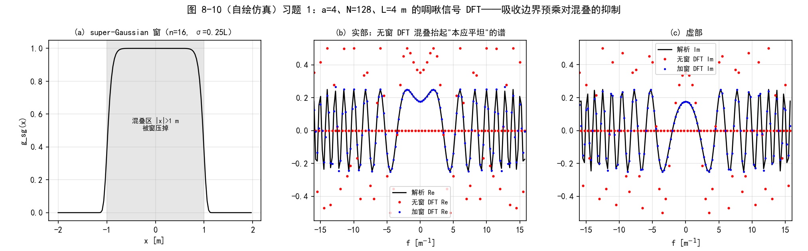
图 8-10（自绘仿真）习题 1：a=4、N=128、L=4 m 的啁啾信号 DFT。(a) 超高斯窗（n=16、σ=0.25L），阴影区 |x|>1 m 是混叠区；(b) 实部与 © 虚部：无窗 DFT（红点）被混叠污染成散点，加窗 DFT（蓝点）贴住解析曲线（黑线）
习题 2（\(\alpha_2\) 消去的代数）：把 \(\delta_2 = (1-\alpha_2)\delta_1 + \alpha_2\delta_n\)、\(\Delta z_1 = \alpha_2 \Delta z\) 代入式 (8.20) 后，左右两个不等式各移项、合并 \((1-\alpha_2)\delta_1\)，得 \(\alpha_2 \delta_n \ge \alpha_2\delta_1 + \alpha_2 \Delta z \delta_1/R - \lambda\alpha_2\Delta z/D_1\)（左）与 \(\alpha_2 \delta_n \le \alpha_2\delta_1 + \alpha_2 \Delta z \delta_1/R + \lambda\alpha_2\Delta z/D_1\)（右）；两边除以 \(\alpha_2 > 0\)，\(\alpha_2\) 严格消去，得式 (8.22)。工程 1 验证 0 的 1000 组随机参数复核判定不一致为 0 组。
习题 3（点源长距：分段无收益的情形）：沿用第 7 章习题 2 的选点 \(\delta_1 = \delta_2 = 1\) cm、\(N = 1024\)：约束 4（单次）要 \(N \ge 1000\)，约束 2 要 \(N \ge 600\)——约束 4 主导。从式 (8.24) 的视角看：\(\Delta z_{max} = (10^{-2})^2 \times 1024 / 10^{-6} = 1.024\times10^5\) m \(\ge \Delta z = 10^5\) m（余量仅 2%）——\(N = 1024\) 正是约束 4 逼出来的，单次传播本来就可行，分段在这里没有收益（分 2 段每段只需 \(N \ge 500\)，余量放大 4 倍，但也仅此而已）。对照书例（\(\delta \sim\) 几十 µm、\(\Delta z_{max} = 0.57\) m \(\ll 2\) m）：分段的收益由 \(\min(\delta_1,\delta_n)^2 N/\lambda\) 相对 \(\Delta z\) 的大小决定；点源长距场景网格间距是厘米级，约束 4 天然宽松。
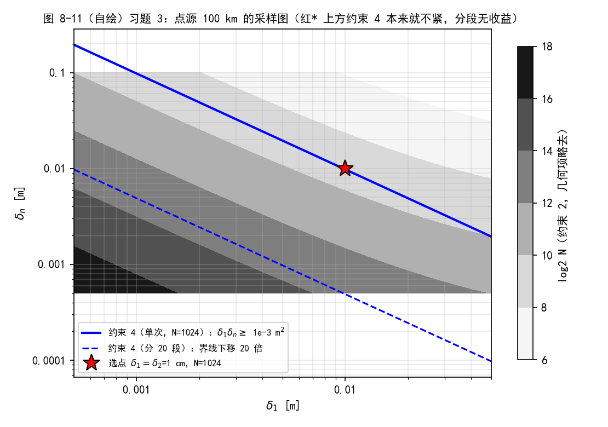
图 8-11（自绘）习题 3：点源 100 km 的采样图（log₂N 等高线，约束 1 对 D₁→0 失效不画）。蓝实线 = 单次传播约束 4 的界（δ₁δₙ ≥ 10⁻³ m²），蓝虚线 = 分 20 段后的界（下移 20 倍）；红星 = 选点 (1 cm, 1 cm)、N=1024，恰好压在单次界线上
习题 4（环形孔径聚焦 100 km）：源是环孔 \(\times\) 聚焦相位（\(R = -\Delta z\)）。取 \(\delta_1 = D_{out}/30 = 50\) mm、\(\delta_n = 2.5\) mm（聚焦斑 Airy 半径 \(1.22\lambda\Delta z/D_{out} = 106\) mm，约 40 点/半径，分辨充裕）、\(D_2 = 0.5\) m：约束 2 要 \(N \ge 635 = 2^{9.31}\) \(\to N = 1024\)；约束 3 因 \(|1 + \Delta z/R| = 0 < D_2/D_1\) 免检；约束 4 给 \(\Delta z_{max} = (2.5\,\mathrm{mm})^2 \times 1024/1.3\,\mu\mathrm{m} = 4.9\) km \(\to\) 至少 21 段（每段 4.8 km）。仿真（21 段收缩网格传播）vs 解析：峰值比 0.9992、ROI(±0.25 m) 内 \(|\Delta I|/\)峰值 \(= 1.0\times10^{-2}\)、相位残差 \(3.6\times10^{-4}\) rad。
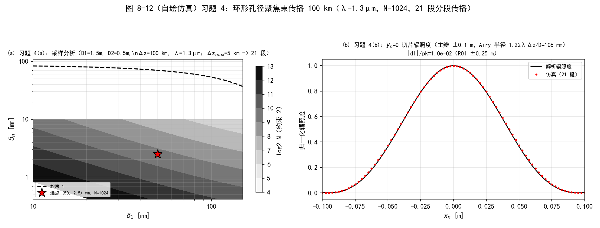
图 8-12（自绘仿真）习题 4：环形孔径聚焦束传播 100 km（λ=1.3µm、N=1024、21 段）。(a) 采样分析（log₂N 等高线 + 约束 1 虚线 + 选点红星）；(b) yₙ=0 切片辐照度：仿真（红点）贴住解析（黑线），主瓣 ±0.1 m
拓展：习题 4 的解析解——聚焦啁啾精确相消
环孔聚焦源的相位是 \(e^{-ik r_1^2/(2\Delta z)}\)（\(R = -\Delta z\)），与菲涅耳核里的源面啁啾 \(e^{+ik r_1^2/(2\Delta z)}\) 逐点相消（不是近似）——菲涅耳积分退化成光瞳的傅里叶变换：
\(\tilde{P}\) 是两个 jinc 函数之差（环孔 = 大圆减小圆）。\(f = 0\) 处取极限 \(2J_1(u)/u \to 1\)，\(\tilde{P}(0) = \tfrac{\pi}{4}(D_{out}^2 - D_{in}^2)\)；注意判断要用 \(|u|\)——负频率也走正规分支（坑与陷阱第 8 条）。
工程 2：习题复现（原书 8.5 节）#
对应文件 matlab/waveprop/ch8/ch8_problems.m 与 python/waveprop/ch8/ch8_problems.py（习题 ⅓/4 的图与量化、习题 2 的推导打印）：
%% ===== 书 Schmidt PM199 第 8 章（工程 2）：习题 1-4 复现 =====
% 原书 8.5 节习题；与 python/waveprop/ch8/ch8_problems.py 数值行为一致。
%
% 习题清单与做法：
% 1. g(x)=exp(i*pi*a^2*x^2)（式 8.26，a=4、N=128、L=4 m）的解析 FT 与
% 离散 DFT 对比；预乘 super-Gaussian 吸收边界（n=16、sigma=0.25L）后
% 重算 DFT，画实部/虚部与解析 FT 对比。
% 解析：FT{exp(i*pi*a^2*x^2)} = e^{i*pi/4}/a * exp(-i*pi*f^2/a^2)。
% Python 实跑：低频段 |f|<=8 与解析的最大偏差：无窗 0.250（= 振幅尺度
% 1/a，混叠完全污染），加窗 0.001 —— 吸收边界把混叠贡献压掉两个量级。
% 2. 补全式 (8.20)->(8.22) 的代数步骤（alpha_2 消去），证明约束 3 与分段数
% 无关（推导打印；数值复核在工程 1 验证 0）。
% 3. 点源（lambda=1um）100 km -> 2 m 望远镜的采样图。取 delta1=delta2=1cm、
% N=1024（第 7 章习题 2 结论，约束 4 主导）；Delta_z_max = 1.02e5 m >=
% 1e5 m（余量 2%）—— 单次传播可行，分段在这里没有收益；分段的收益
% 出现在 delta 为几十 um 的场景（书例 Delta_z_max=0.57 m << 2 m）。
% 4. 环形孔径（D_out=1.5m、D_in=0.5m、lambda=1.3um）平面波聚焦到 100 km
% 处目标平面：(a) 采样分析 + 分段数确定；(b) yn=0 切片辐照度与相位
% （仿真 vs 解析同图）。
% 解析：源带聚焦相位 exp(-i*k*r1^2/(2*Dz)) 时菲涅耳积分的二次相位恰好
% 相消，观察面场 = e^{ikDz} e^{ikr^2/(2Dz)}/(i*lambda*Dz) x P~(f)，
% f = r/(lambda*Dz)，P~ 为环孔光瞳的 FT：
% P~(f) = (pi/4)*[D_out^2*2J1(pi*D_out*f)/(pi*D_out*f)
% - D_in^2 *2J1(pi*D_in*f) /(pi*D_in*f)]。
% Python 实跑：delta1=50mm、delta_n=2.5mm（Airy 半径
% 1.22*lambda*Dz/D_out = 106 mm，约 40 点/半径）、N=1024、21 段
% （每段 4.8 km <= Delta_z_max=4.9 km）；仿真/解析峰值比 0.9992，
% ROI 内 |dI|/pk=1.0e-2、相位残差 3.6e-4 rad；
% 二次相位系数拟合 25.3 vs 解析 24.2 /m^2（差 4.7%，对应
% 拟合区间 ±8mm 内 <1e-4 rad 的相位差——系数量化对小相位差极敏感）。
%
% MATLAB/Python 差异：MATLAB 用 besselj() 求 J1（Python 用 scipy.special.j1）；
% 索引 1-based；annulus_ft 的 f=0 极限分支要用 |u| 判断（负 f 同样走正规分支）。
clear; clc; close all;
%% ================= 习题 1：啁啾信号的 DFT 与吸收边界预乘 =================
fprintf('===== 习题 1：g(x)=exp(i*pi*a^2*x^2) 的 DFT 与吸收边界预乘 =====\n');
a = 4; N = 128; L = 4;
delta = L/N;
n = -N/2 : N/2-1;
x = n * delta;
g = exp(1i*pi*a^2*x.^2); % 式 (8.26)
% super-Gaussian 吸收边界（n=16、sigma=0.25L；r 取索引半径 |x|/delta）
sig_idx = 0.25*L/delta;
w = exp(-(abs(x)/delta).^16 / sig_idx^16);
g_win = w .* g;
% 解析 FT 与两个 DFT
f = n / (N*delta);
G_an = exp(1i*pi/4)/a * exp(-1i*pi*f.^2/a^2);
G_num = ft1(g, delta);
G_win = ft1(g_win, delta);
band = abs(f) <= 8;
fprintf(' delta=%.4f m, Nyquist=%.1f /m；混叠边界 |x| = %.2f m\n', ...
delta, 1/(2*delta), 1/(2*a^2*delta));
fprintf(' 窗在 |x|=1 m 处 |w| = %.3f；|x|=2 m 处 %.2e\n', ...
interp1(x(x>0), w(x>0), 1.0), interp1(x(x>0), w(x>0), 2.0));
fprintf(' 低频段 |f|<=8 与解析 FT 最大偏差：无窗 %.3f，加窗 %.3f（尺度 1/a=%.2f）\n', ...
max(abs(G_num(band) - G_an(band))), max(abs(G_win(band) - G_an(band))), 1/a);
figure('Position', [60 60 1350 420]);
subplot(1, 3, 1);
plot(x, w, 'k-', 'LineWidth', 1.2); grid on;
xlabel('x [m]'); ylabel('g_{sg}(x)');
title('(a) super-Gaussian 窗（n=16, \sigma=0.25L）');
subplot(1, 3, 2);
plot(f, real(G_an), 'k-', f, real(G_num), 'r.', f, real(G_win), 'b.'); grid on;
xlim([-16 16]);
xlabel('f [m^{-1}]');
legend('解析 Re', '无窗 DFT Re', '加窗 DFT Re');
title('(b) 实部：无窗 DFT 混叠污染');
subplot(1, 3, 3);
plot(f, imag(G_an), 'k-', f, imag(G_num), 'r.', f, imag(G_win), 'b.'); grid on;
xlim([-16 16]);
xlabel('f [m^{-1}]');
legend('解析 Im', '无窗 DFT Im', '加窗 DFT Im');
title('(c) 虚部');
%% ================= 习题 2：式 (8.20)->(8.22) 的代数填充 =================
fprintf('===== 习题 2：式 (8.20) -> (8.22) 的代数填充 =====\n');
fprintf(' 起点（式 8.20）：(1+Dz1/R)*d1 - w*Dz1/D1 <= d2 <= (1+Dz1/R)*d1 + w*Dz1/D1\n');
fprintf(' 代入 d2 = (1-a2)*d1 + a2*dn、Dz1 = a2*Dz（式 8.21），移项合并后：\n');
fprintf(' a2*dn >= a2*d1 + a2*Dz*d1/R - w*a2*Dz/D1（左）；<= ... + w*a2*Dz/D1（右）\n');
fprintf(' 两边除以 a2（>0）—— alpha_2 严格消去，得式 (8.22) == 式 (7.53)。\n');
fprintf(' 数值复核见工程 1 验证 0（1000 组随机参数判定不一致 = 0 组）。\n');
%% ================= 习题 3：点源 100 km 的采样图 =================
fprintf('===== 习题 3：点源 100 km -> 2 m 望远镜的采样图 =====\n');
wvl = 1e-6; Dz3 = 100e3; D2p = 2; d1p = 1e-2; d2p = 1e-2; Np = 1024;
fprintf(' 取 delta1 = delta2 = 1 cm、N = %d（约束 4 主导）\n', Np);
fprintf(' 约束 2（D1->0）：N >= %.0f；约束 4（单次）：N >= %.0f\n', ...
D2p/(2*d2p) + wvl*Dz3/(2*d1p*d2p), wvl*Dz3/(d1p*d2p));
dzmax3 = d1p^2 * Np / wvl; % 式 (8.24)
fprintf(' Delta_z_max = %.3e m >= Dz = 1e5 m（余量 %.0f%%）-> 单次可行，分段无收益\n', ...
dzmax3, (dzmax3/Dz3 - 1)*100);
fprintf(' 对照书例：Delta_z_max = 0.57 m << 2 m -> 必须分段\n');
d1g = logspace(-3.3, -1.3, 300);
[d1m, dnm] = meshgrid(d1g, logspace(-3.3, -1.0, 300));
C2 = D2p./(2*dnm) + wvl*Dz3./(2*d1m.*dnm); % 约束 2（几何项略去，D1->0）
figure('Position', [80 80 760 540]);
contourf(d1m, dnm, log2(max(C2, 1)), 6:2:18, 'LineStyle', 'none');
colormap(gray); colorbar; hold on;
plot(d1g, wvl*Dz3/Np./d1g, 'b-', 'LineWidth', 2);
plot(d1g, wvl*Dz3/Np./d1g/20, 'b--', 'LineWidth', 1.5);
plot(d1p, d2p, 'r*', 'MarkerSize', 14);
set(gca, 'XScale', 'log', 'YScale', 'log');
xlabel('\delta_1 [m]'); ylabel('\delta_n [m]');
title('习题 3：点源 100 km 采样图（红* 上方约束 4 不紧，分段无收益）');
legend({'约束 2（log2 N）', '约束 4（单次 N=1024）', '约束 4（分 20 段）', ...
'选点 \delta=1 cm、N=1024'}, 'Location', 'southwest');
%% ================= 习题 4：环形孔径聚焦束 100 km =================
fprintf('===== 习题 4：环形孔径（D_out=1.5m, D_in=0.5m）聚焦 100 km =====\n');
wvl4 = 1.3e-6; Dz4 = 100e3; D_out = 1.5; D_in = 0.5; D1 = D_out;
delta1 = D1/30; % 30 点跨外径 -> 50 mm
deltan = 2.5e-3; % Airy 半径 1.22*lambda*Dz/D = 106 mm
N4 = 1024;
D2q = 0.5; % ROI 直径 0.5 m
c2 = constraint2_N(delta1, deltan, D1, D2q, wvl4, Dz4);
fprintf(' delta1=%.1f mm、delta_n=%.1f mm、约束 2：N >= %.0f -> N=%d\n', ...
delta1*1e3, deltan*1e3, c2, N4);
constraint3_d2(delta1, D1, wvl4, Dz4, -Dz4); % 约束 3（R=-Dz）：|1+Dz/R|=0 < D2/D1 免检
fprintf(' 约束 3（R=-Dz，聚焦到目标）：|1+Dz/R|=0 < D2/D1 -> 免检\n');
dzmax4 = dz_max_partial(delta1, deltan, N4, wvl4);
nseg4 = ceil(Dz4/dzmax4);
fprintf(' 约束 4：Delta_z_max = %.0f m -> 至少 %d 段（%d 平面）；取 %d 段（每段 %.1f km）\n', ...
dzmax4, nseg4, nseg4+1, nseg4, Dz4/nseg4/1e3);
z4 = (1:nseg4) * Dz4 / nseg4;
% 源：环孔 x 聚焦相位 exp(-i k r1^2/(2 Dz))（会聚到目标面）
[x1g, y1g] = meshgrid((-N4/2 : N4/2-1) * delta1);
r1 = sqrt(x1g.^2 + y1g.^2);
ap = circle(x1g, y1g, D_out/2) - circle(x1g, y1g, D_in/2);
src = ap .* exp(-1i*pi/wvl4/Dz4 * r1.^2);
[xn4, ~, Uout4] = ang_spec_multi_prop_vac(src, wvl4, delta1, deltan, z4);
% 解析：聚焦相位与传播核啁啾相消 -> 观察面 = e^{ikDz}e^{ikr^2/2Dz}/(i w Dz) x P~(f)
xn1 = xn4(N4/2+1, :);
f4 = xn1 / (wvl4*Dz4);
Ptil = annulus_ft(f4, D_out, D_in);
U_an = exp(1i*pi/wvl4/Dz4*xn1.^2) / (1i*wvl4*Dz4) .* Ptil;
I_num = abs(Uout4(N4/2+1,:)).^2; I_an = abs(U_an).^2; pk = max(I_an);
win4 = abs(xn1) <= D2q/2;
eI4 = max(abs(I_num(win4) - I_an(win4)))/pk;
mph4 = win4 & (I_an > 0.05*pk);
eph4 = max(abs(angle(Uout4(N4/2+1,mph4)./U_an(mph4))));
fprintf(' 解析峰值辐照度 = %.3e；仿真/解析峰值比 = %.4f\n', pk, max(I_num)/pk);
fprintf(' ROI(+-0.25 m)内：|dI|/峰值 = %.2e；相位残差(|U|>5%%峰值) = %.2e rad\n', eI4, eph4);
% 采样图 + 切片图
d1g4 = logspace(log10(delta1/5), log10(delta1*3), 260);
[d1m4, dnm4] = meshgrid(d1g4, logspace(log10(deltan/6), log10(deltan*4), 260));
C24 = constraint2_N(d1m4, dnm4, D1, D2q, wvl4, Dz4);
figure('Position', [60 60 1260 480]);
subplot(1, 2, 1);
contourf(d1m4*1e3, dnm4*1e3, log2(max(C24, 1)), 4:13, 'LineStyle', 'none');
colormap(gray); colorbar; hold on;
plot(d1g4*1e3, constraint1_d2(d1g4, D1, D2q, wvl4, Dz4)*1e3, 'k--', 'LineWidth', 1.6);
plot(delta1*1e3, deltan*1e3, 'r*', 'MarkerSize', 14);
set(gca, 'XScale', 'log', 'YScale', 'log');
xlabel('\delta_1 [mm]'); ylabel('\delta_n [mm]');
title('(a) 习题 4(a)：采样分析（\Deltaz_{max}=4.9 km -> 21 段）');
legend({'约束 2（log2 N）', '约束 1', '选点 (50, 2.5) mm、N=1024'}, ...
'Location', 'southwest');
subplot(1, 2, 2);
plot(xn1, I_an/pk, 'k-', xn1, I_num/pk, 'r.'); grid on;
xlim([-0.1 0.1]);
xlabel('x_n [m]'); ylabel('归一化辐照度');
legend('解析辐照度', '仿真（21 段）');
title('(b) 习题 4(b)：y_n=0 切片辐照度（主瓣 ±0.1 m）');
%% ================= 本地函数 =================
function G = ft1(g, delta)
% 原书 Listing 2.3 思路：定标正确的一维 DFT（乘 delta）。
G = fftshift(fft(fftshift(g))) * delta;
end
function out = annulus_ft(f, D_out, D_in)
% 环孔光瞳 P = circ(2r/D_out) - circ(2r/D_in) 的（径向）傅里叶变换。
% FT{circ(r/a)} = pi*a^2 * 2J1(2*pi*a*f)/(2*pi*a*f)，代入 a = D/2。
f = f(:).';
out = zeros(size(f));
for kk = 1:numel(f)
uo = pi * D_out * f(kk);
ui = pi * D_in * f(kk);
if abs(uo) < 1e-12
to = D_out^2; % u->0: 2J1(u)/u -> 1
else
to = D_out^2 * 2 * besselj(1, uo) / uo;
end
if abs(ui) < 1e-12
ti = D_in^2;
else
ti = D_in^2 * 2 * besselj(1, ui) / ui;
end
out(kk) = pi/4 * (to - ti);
end
end
function [xn, yn, Uout, planes] = ang_spec_multi_prop_vac(Uin, wvl, delta1, deltan, z, sg, record)
% 任意次部分传播（书 Listing 8.1 原样整理，含吸收边界）。
if nargin < 6 || isempty(sg)
sg = super_gaussian_absorber(size(Uin, 1));
end
if nargin < 7
record = false;
end
N = size(Uin, 1);
[nx, ny] = meshgrid((-N/2 : 1 : N/2 - 1));
k = 2*pi/wvl;
z = [0 z];
n = length(z);
Delta_z = z(2:n) - z(1:n-1);
alpha = z / z(n);
delta = (1-alpha) * delta1 + alpha * deltan; % 式 (8.8)
m = delta(2:n) ./ delta(1:n-1);
x1 = nx * delta(1);
y1 = ny * delta(1);
r1sq = x1.^2 + y1.^2;
Q1 = exp(i*k/2*(1-m(1))/Delta_z(1)*r1sq);
Uin = Uin .* Q1;
planes = cell(1, n-1);
for idx = 1 : n-1
deltaf = 1 / (N*delta(idx));
fX = nx * deltaf;
fY = ny * deltaf;
fsq = fX.^2 + fY.^2;
Z = Delta_z(idx);
Q2 = exp(-i*pi^2*2*Z/m(idx)/k*fsq);
Uin = sg .* ift2(Q2 .* ft2(Uin / m(idx), delta(idx)), deltaf);
if record
planes{idx} = Uin;
end
end
xn = nx * delta(n);
yn = ny * delta(n);
rnsq = xn.^2 + yn.^2;
Q3 = exp(i*k/2*(m(n-1)-1)/(m(n-1)*Z)*rnsq);
Uout = Q3 .* Uin;
end
function g = super_gaussian_absorber(N, w_frac, order)
% super-Gaussian 吸收边界（式 8.1；书 Listing 8.1 第 10-12 行）。
if nargin < 2
w_frac = 0.47;
end
if nargin < 3
order = 16;
end
[nx, ny] = meshgrid((-N/2 : 1 : N/2 - 1));
nsq = nx.^2 + ny.^2;
w = w_frac * N;
g = exp(-nsq.^(order/2) / w^order);
end
function [lo, hi] = constraint3_d2(d1, D1, wvl, Dz, R)
% 约束 3（式 8.22 == 式 7.53）。
slope = 1 + Dz/R;
off = wvl*Dz/D1;
lo = slope*d1 - off;
hi = slope*d1 + off;
end
function Nlo = constraint2_N(d1, dn, D1, D2, wvl, Dz)
% 约束 2（式 7.20）。
Nlo = D1./(2*d1) + D2./(2*dn) + wvl*Dz./(2*d1.*dn);
end
function dzmax = dz_max_partial(d1, dn, N, wvl)
% 式 (8.24)：Delta_z_max = min(d1,dn)^2 * N / lambda。
dzmax = min(d1, dn)^2 * N / wvl;
end
function G = ft2(g, delta)
% 原书 Listing 2.5：定标正确的二维 DFT（乘 delta^2）。
G = fftshift(fft2(fftshift(g)))*delta^2;
end
function g = ift2(G, delta_f)
% 原书 Listing 2.6：定标正确的二维逆 DFT（乘 (N*delta_f)^2）。
N = size(G, 1);
g = fftshift(ifft2(fftshift(G)))*(N*delta_f)^2;
end
function out = rect(x)
% rect(x)：|x|<1/2 取 1，|x|=1/2 取 1/2，其余 0。
out = double(abs(x) < 1/2) + 0.5*double(abs(x) == 1/2);
end
function out = circle(X, Y, R)
% circle(X,Y,R)：X^2+Y^2 <= R^2 内取 1，边界取 1/2（书附录 A 定义）。
r2 = X.^2 + Y.^2;
out = double(r2 < R^2) + 0.5*double(abs(r2 - R^2) < eps(R^2));
end
# -*- coding: utf-8 -*-
"""
===== 书 Schmidt PM199 第 8 章（工程 2：习题 1-4）=====
部分传播与放宽采样约束——习题复现与数值验证（原书 8.5 节）。
习题清单：
1. 啁啾信号 g(x)=exp(i*pi*a^2*x^2)（式 8.26，a=4，N=128，L=4 m）的解析
FT 与离散 DFT 对比；再把信号预乘 super-Gaussian 吸收边界
（n=16、sigma=0.25L）重算 DFT，画两版 DFT 的实部/虚部并与解析 FT 对比。
要点：a=4、L=4 m 时 f_loc = a^2*x = 16x，Nyquist = 16/m，混叠边界
|x| = 1 m = L/4；sigma = 0.25L = 1 m 的窗恰好在混叠区把信号压掉
——吸收边界抑制混叠的一维玩具版。
2. 补全式 (8.20) -> (8.22) 之间的代数步骤（alpha_2 消去），证明约束 3
与分段数无关。代数推导见笔记；工程 1 的验证 0 已做 1000 组随机参数
数值复核，这里再打印推导要点。
3. 点源（lambda=1 um）传播 100 km 到 2 m 直径望远镜孔径的采样图
（约束 1&2 等高线 + 可行选点），并与"只有一次传播"的情形比较：
delta1=delta2=1 cm、N=1024 时 Delta_z_max = min^2*N/lambda = 1.02e5 m
>= 1e5 m —— 单次传播约束 4 本来就不紧，分段在这里没有收益；
分段的收益出现在网格间距小（delta ~ 几十 um）的场景（书例）。
4. 环形孔径（外径 1.5 m、内径 0.5 m、lambda=1.3 um）平面波聚焦到
100 km 处目标平面：(a) 采样分析（约束 1/2/3 + 分段数确定）；
(b) yn=0 切片辐照度与相位，仿真 vs 解析同图。
解析：源带聚焦相位 exp(-i*k*r1^2/(2*Dz)) 时菲涅耳积分的二次相位
恰好相消，观察面场 = e^{ikDz} e^{ikr^2/(2Dz)} /(i*lambda*Dz) x
环孔光瞳的傅里叶变换（精确成立，非近似）：
P(r) = circ(2r/D_out) - circ(2r/D_in)
P~(f) = (pi/4)[D_out^2 * 2J1(pi D_out f)/(pi D_out f)
- D_in^2 * 2J1(pi D_in f)/(pi D_in f)]，f = r/(lambda*Dz)。
数值验证（运行本脚本全部自动打印，图存 out_*.png）：
(1) 习题 1：无窗 DFT vs 加窗 DFT vs 解析 FT（实部/虚部），量化误差 ->
out_fig10_prob1.png（笔记 fig-8-10）。
(2) 习题 2：打印推导 + 引用工程 1 验证 0 的随机参数结论。
(3) 习题 3：点源采样图 + 单次/分段约束 4 对照 -> out_fig11_prob3.png
（笔记 fig-8-11）。
(4) 习题 4：采样分析（约束 2 等高线 + 选点）+ yn=0 辐照度/相位
仿真 vs 解析 -> out_fig12_prob4.png（笔记 fig-8-12）。
运行：C:/Anocanda/envs/machinelearn/python.exe -I ch8_problems.py
"""
import os
import sys
import numpy as np
import matplotlib
matplotlib.use('Agg')
import matplotlib.pyplot as plt
from scipy.special import j1
plt.rcParams['font.sans-serif'] = ['SimHei', 'Microsoft YaHei', 'DejaVu Sans']
plt.rcParams['axes.unicode_minus'] = False
from matplotlib.ticker import FuncFormatter
def plain_log(axis):
"""log 轴用纯文本刻度（避免 mathtext 的 U+2212 负号被 SimHei 顶成缺字框）。"""
axis.set_major_formatter(FuncFormatter(lambda v, p: '%g' % v))
axis.set_minor_formatter(FuncFormatter(lambda v, p: ''))
_HERE = os.path.dirname(os.path.abspath(__file__))
sys.path.insert(0, _HERE) # -I 模式下脚本目录不在 path
sys.path.insert(0, os.path.join(_HERE, '..', '..', 'fourier', 'common'))
from base import rect, circle, ft1_centered as ft1 # noqa: E402
from ch8_partial_prop import ( # noqa: E402
ang_spec_multi_prop_vac, super_gaussian_absorber,
constraint1_d2, constraint2_N, constraint3_d2,
dz_max_partial, delta_middle)
def prob1(outdir):
"""习题 1：啁啾信号的 DFT 与吸收边界预乘。"""
print('===== 习题 1：g(x)=exp(i*pi*a^2*x^2) 的 DFT 与吸收边界预乘 =====')
a = 4.0
N = 128
L = 4.0
delta = L / N
n = np.arange(N) - N // 2
x = n * delta
g = np.exp(1j * np.pi * a ** 2 * x ** 2)
# super-Gaussian 吸收边界（n=16、sigma=0.25L；r 取索引半径 |x|/delta）
sig_idx = 0.25 * L / delta
w = np.exp(-(np.abs(x) / delta) ** 16 / sig_idx ** 16) # 一维超高斯
g_win = w * g
# 解析 FT：FT{exp(i pi a^2 x^2)} = e^{i pi/4}/a * exp(-i pi f^2/a^2)
df = 1.0 / (N * delta) # 频域采样间隔（ft1_centered 约定）
f = n * df
G_an = np.exp(1j * np.pi / 4.0) / a * np.exp(-1j * np.pi * f ** 2 / a ** 2)
G_num = ft1(g, delta)
G_win = ft1(g_win, delta)
# 量化（比较低频段 |f| <= 8 m^-1，即窗明显起作用的范围）
band = np.abs(f) <= 8.0
e_raw = np.max(np.abs(G_num[band] - G_an[band]))
e_win = np.max(np.abs(G_win[band] - G_an[band]))
print(' delta=%.4f m, Nyquist=%.1f /m；f_loc = a^2*x = 16x，混叠边界 |x| = %.2f m'
% (delta, 1 / (2 * delta), 1.0 / (2 * a ** 2 * delta)))
print(' 窗在 |x|=1 m（=混叠边界）处 |w| = %.3f；|x|=2 m 处 %.2e'
% (np.interp(1.0, x[x > 0], w[x > 0]), np.interp(2.0, x[x > 0], w[x > 0])))
print(' 低频段 |f|<=8 与解析 FT 的最大偏差：无窗 DFT %.3f，加窗 DFT %.3f'
'（振幅尺度 1/a = %.2f）' % (e_raw, e_win, 1 / a))
fig, axs = plt.subplots(1, 3, figsize=(13.5, 4.2))
axs[0].plot(x, w, 'k-', lw=1.2)
axs[0].set_title('(a) super-Gaussian 窗（n=16, σ=0.25L）', fontsize=10)
axs[0].set_xlabel('x [m]')
axs[0].set_ylabel('g_sg(x)')
axs[0].axvspan(-1, 1, color='0.9')
axs[0].text(0, 0.5, '混叠区 |x|>1 m\n被窗压掉', ha='center', fontsize=8)
axs[0].grid(alpha=0.3)
axs[1].plot(f, G_an.real, 'k-', lw=1.3, label='解析 Re')
axs[1].plot(f, G_num.real, 'r.', ms=4, label='无窗 DFT Re')
axs[1].plot(f, G_win.real, 'b.', ms=3, label='加窗 DFT Re')
axs[1].set_xlim(-16, 16)
axs[1].set_xlabel('f [m$^{-1}$]')
axs[1].set_title('(b) 实部：无窗 DFT 混叠抬起"本应平坦"的谱', fontsize=10)
axs[1].legend(fontsize=8)
axs[1].grid(alpha=0.3)
axs[2].plot(f, G_an.imag, 'k-', lw=1.3, label='解析 Im')
axs[2].plot(f, G_num.imag, 'r.', ms=4, label='无窗 DFT Im')
axs[2].plot(f, G_win.imag, 'b.', ms=3, label='加窗 DFT Im')
axs[2].set_xlim(-16, 16)
axs[2].set_xlabel('f [m$^{-1}$]')
axs[2].set_title('(c) 虚部', fontsize=10)
axs[2].legend(fontsize=8)
axs[2].grid(alpha=0.3)
fig.suptitle('图 8-10（自绘仿真）习题 1：a=4、N=128、L=4 m 的啁啾信号 DFT'
'——吸收边界预乘对混叠的抑制', fontsize=12)
fig.subplots_adjust(top=0.84, bottom=0.12, left=0.06, right=0.98,
wspace=0.25)
fp = os.path.join(outdir, 'out_fig10_prob1.png')
fig.savefig(fp, dpi=150)
print(' 已保存 %s' % fp)
return e_raw, e_win
def prob2():
"""习题 2：式 (8.20)->(8.22) 的代数填充（推导打印）。"""
print('===== 习题 2：式 (8.20) -> (8.22) 的代数填充（约束 3 与分段数无关） =====')
print(' 起点（式 8.20）：(1+Dz1/R)*d1 - w*Dz1/D1 <= d2 <= (1+Dz1/R)*d1 + w*Dz1/D1')
print(' 代入 d2 = (1-a2)*d1 + a2*dn、Dz1 = a2*Dz（式 8.21）：')
print(' (1+a2*Dz/R)*d1 - w*a2*Dz/D1 <= (1-a2)*d1 + a2*dn')
print(' <= (1+a2*Dz/R)*d1 + w*a2*Dz/D1')
print(' 左：a2*dn >= a2*d1 + a2*Dz*d1/R - w*a2*Dz/D1 （移项合并 (1-a2)d1）')
print(' 右：a2*dn <= a2*d1 + a2*Dz*d1/R + w*a2*Dz/D1')
print(' 两边除以 a2（a2>0）——alpha_2 严格消去：')
print(' (1+Dz/R)*d1 - w*Dz/D1 <= dn <= (1+Dz/R)*d1 + w*Dz/D1 （式 8.22）')
print(' 与式 (7.53) 完全相同 —— 约束 3 对任意分段数一致；')
print(' 数值复核见工程 1 验证 0（1000 组随机参数判定不一致 = 0 组）。')
def prob3(outdir):
"""习题 3：点源 100 km 的采样图，单次 vs 分段。"""
print('===== 习题 3：点源 100 km -> 2 m 望远镜的采样图与单次/分段对比 =====')
wvl = 1e-6
Dz = 100e3
D2 = 2.0
# 第 7 章习题 2 的结论：delta1 = delta2 = 1 cm、N >= 1024（约束 4 主导；
# 点源 D1->0 使约束 1 失效）
d1 = d2 = 1e-2
N = 1024
print(' 取 delta1 = delta2 = 1 cm、N = %d（第 7 章习题 2 的选点）' % N)
print(' 约束 2（D1->0）：N >= D2/(2*dn) + w*Dz/(2*d1*dn) = %.0f'
% (D2 / (2 * d2) + wvl * Dz / (2 * d1 * d2)))
print(' 约束 4（单次）：N >= w*Dz/(d1*dn) = %.0f -> 主导' % (wvl * Dz / (d1 * d2)))
dzm = dz_max_partial(d1, d2, N, wvl)
print(' 分段视角：Delta_z_max = min^2*N/lambda = %.3e m >= Dz = 1e5 m'
'（余量仅 %.0f%% —— N=1024 正是约束 4 逼出来的）-> 单次可行；'
'分 2 段则每段约束 4 只需 N >= %.0f，余量 x4'
% (dzm, (dzm / Dz - 1) * 100, wvl * Dz / 2 / (d1 * d2)))
print(' 对照书例（delta1=66.7um, delta_n=200um, N=128, Dz=2m）：'
'Delta_z_max = 0.57 m << 2 m -> 必须分段')
print(' 结论：分段的收益由 min(delta1,deltan)^2*N/lambda 相对 Dz 的大小决定；'
'点源长距场景 delta~cm 量级，约束 4 天然宽松')
# 采样图：约束 2 的 log2 N 等高线（约束 1 对 D1->0 失效，不画）
d1g = np.logspace(-3.3, -1.3, 300)
dng = np.logspace(-3.3, -1.0, 300)
D1g, Dng = np.meshgrid(d1g, dng)
Nc2 = D2 / (2 * Dng) + wvl * Dz / (2 * D1g * Dng) # 约束 2（几何项略去）
fig, ax = plt.subplots(figsize=(7.4, 5.2))
cs = ax.contourf(D1g, Dng, np.log2(np.maximum(Nc2, 1)),
levels=np.arange(6, 20, 2), cmap='Greys')
cb = fig.colorbar(cs, ax=ax, shrink=0.9)
cb.set_label('log2 N（约束 2，几何项略去）')
# 约束 4 的单次 N=1024 界：w*Dz/(d1*dn) <= 1024 -> d1*dn >= w*Dz/1024
prod_min = wvl * Dz / N
d1line = np.logspace(-3.3, -1.3, 200)
ax.plot(d1line, prod_min / d1line, 'b-', lw=2,
label='约束 4（单次，N=1024）：$\\delta_1\\delta_n \\geq$ 1e-3 m$^2$')
# 分段（例如 20 段，每段 5 km）后的约束 4 界
ax.plot(d1line, prod_min / 20 / d1line, 'b--', lw=1.5,
label='约束 4（分 20 段）：界线下移 20 倍')
ax.plot(d1, d2, 'r*', ms=15, mec='k', zorder=6,
label='选点 $\\delta_1=\\delta_2$=1 cm，N=1024')
ax.set_xscale('log')
ax.set_yscale('log')
plain_log(ax.xaxis)
plain_log(ax.yaxis)
ax.set_xlabel('$\\delta_1$ [m]')
ax.set_ylabel('$\\delta_n$ [m]')
ax.set_title('图 8-11（自绘）习题 3：点源 100 km 的采样图'
'（红* 上方约束 4 本来就不紧，分段无收益）', fontsize=10)
ax.legend(fontsize=8, loc='lower left')
ax.grid(alpha=0.3, which='both')
fig.tight_layout()
fp = os.path.join(outdir, 'out_fig11_prob3.png')
fig.savefig(fp, dpi=150)
print(' 已保存 %s' % fp)
def annulus_ft(f, D_out, D_in):
"""环孔光瞳 P = circ(2r/D_out) - circ(2r/D_in) 的（径向）傅里叶变换。
FT{circ(r/a)} = pi*a^2 * 2*J1(2*pi*a*f)/(2*pi*a*f)，代入 a = D/2：
P~(f) = (pi/4)*[D_out^2*2J1(pi*D_out*f)/(pi*D_out*f)
- D_in^2*2J1(pi*D_in*f)/(pi*D_in*f)]
f=0 处取极限 = (pi/4)(D_out^2 - D_in^2)。
"""
f = np.atleast_1d(np.asarray(f, dtype=float))
def jinc_term(D, fv):
u = np.pi * D * fv
small = np.abs(u) < 1e-12 # 注意 |u|：负 f 也要走正规分支
res = np.empty_like(u)
res[small] = D ** 2 # u->0: 2J1(u)/u -> 1
uu = u[~small]
res[~small] = D ** 2 * 2 * j1(uu) / uu
return res
out = (np.pi / 4.0) * (jinc_term(D_out, f) - jinc_term(D_in, f))
return out
def prob4(outdir):
"""习题 4：环形孔径聚焦束 100 km 的采样分析 + 仿真 vs 解析。"""
print('===== 习题 4：环形孔径（D_out=1.5m, D_in=0.5m）聚焦 100 km =====')
wvl = 1.3e-6
Dz = 100e3
D_out, D_in = 1.5, 0.5
D1 = D_out
# 源面：30 点跨外径 -> delta1 = 50 mm；观察面：聚焦斑 Airy 半径
# 1.22*lambda*Dz/D_out = 1.22*1.3e-6*1e5/1.5 = 106 mm —— delta_n 细于它
# 才能分辨主瓣与环结构，取 delta_n = 2.5 mm（约 40 点/Airy 半径，充裕）；
# N 由约束 2 逼到 1024
delta1 = D1 / 30
deltan = 2.5e-3
N = 1024
D2 = 0.5 # ROI 直径 0.5 m
# 约束 2：
c2 = constraint2_N(delta1, deltan, D1, D2, wvl, Dz)
print(' delta1 = %.1f mm（30 点跨外径）、delta_n = %.1f mm（Airy 半径 10.6 mm）、'
'N = %d' % (delta1 * 1e3, deltan * 1e3, N))
print(' 约束 2（ROI 0.5m）：N >= %.1f = 2^%.2f -> N=%d 成立'
% (c2, np.log2(c2), N))
# 约束 3（聚焦源 R = -Dz）：
lo3, hi3 = constraint3_d2(delta1, D1, wvl, Dz, -Dz)
print(' 约束 3（R=-Dz，聚焦到目标）：|1+Dz/R| = 0 < D2/D1 -> 免检'
'（区间 [%.0f, %.0f] mm 恒含 delta_n）' % (lo3 * 1e3, hi3 * 1e3))
# 约束 4 / 分段：
dzm = dz_max_partial(delta1, deltan, N, wvl)
nseg = int(np.ceil(Dz / dzm))
print(' 约束 4：Delta_z_max = min^2*N/lambda = %.0f m -> 至少 %d 段（%d 平面）'
% (dzm, nseg, nseg + 1))
print(' 取 %d 段（每段 %.1f km，<= Delta_z_max）' % (nseg, Dz / nseg / 1e3))
nseg_use = nseg
z = (np.arange(1, nseg_use + 1)) * Dz / nseg_use
# 源：环孔 x 聚焦相位 exp(-i k r1^2/(2 Dz))
n = np.arange(N) - N // 2
x1, y1 = np.meshgrid(n * delta1, n * delta1)
r1 = np.sqrt(x1 ** 2 + y1 ** 2)
ap = circle(x1, y1, D_out / 2) - circle(x1, y1, D_in / 2)
src = ap * np.exp(-1j * np.pi / wvl / Dz * r1 ** 2)
print(' 仿真：%d 次分段传播（收缩网格 m=%.3f，网格跟随光束收缩）……'
% (nseg_use, deltan / delta1))
xn, yn, Uout = ang_spec_multi_prop_vac(src, wvl, delta1, deltan, z)
# 解析：聚焦相位与传播核啁啾相消 -> 观察面 = e^{ikDz}e^{ikr^2/2Dz}/(i w Dz) x P~(f)
sl = N // 2
xn1 = xn[sl, :]
f = xn1 / (wvl * Dz)
Ptil = annulus_ft(f, D_out, D_in)
U_an = np.exp(1j * np.pi / wvl / Dz * xn1 ** 2) / (1j * wvl * Dz) * Ptil
I_num = np.abs(Uout[sl, :]) ** 2
I_an = np.abs(U_an) ** 2
pk = I_an.max()
win = np.abs(xn1) <= D2 / 2
eI = np.max(np.abs(I_num[win] - I_an[win])) / pk
mph = win & (I_an > 0.05 * pk)
eph = np.max(np.abs(np.angle(Uout[sl, :][mph] / U_an[mph])))
print(' 解析峰值辐照度 = %.3e；仿真/解析峰值比 = %.4f'
% (pk, I_num.max() / pk))
print(' ROI(+-0.25 m)内：|dI|/峰值 = %.2e；相位残差(|U|>5%%峰值) = %.2e rad'
% (eI, eph))
# 采样图（约束 2 等高线 + 选点）
d1g = np.logspace(np.log10(delta1 / 5), np.log10(delta1 * 3), 260)
dng = np.logspace(np.log10(deltan / 6), np.log10(deltan * 4), 260)
D1g, Dng = np.meshgrid(d1g, dng)
Nc2 = constraint2_N(D1g, Dng, D1, D2, wvl, Dz)
fig, axs = plt.subplots(1, 2, figsize=(12.6, 4.8))
ax = axs[0]
cs = ax.contourf(D1g * 1e3, Dng * 1e3, np.log2(np.maximum(Nc2, 1)),
levels=np.arange(4, 14), cmap='Greys')
cb = fig.colorbar(cs, ax=ax, shrink=0.9)
cb.set_label('log2 N（约束 2）')
ax.plot(d1g * 1e3, constraint1_d2(d1g, D1, D2, wvl, Dz) * 1e3, 'k--', lw=1.6,
label='约束 1')
ax.plot(delta1 * 1e3, deltan * 1e3, 'r*', ms=14, mec='k', zorder=6,
label='选点 (%.0f, %.1f) mm, N=%d' % (delta1 * 1e3, deltan * 1e3, N))
ax.set_xscale('log')
ax.set_yscale('log')
plain_log(ax.xaxis)
plain_log(ax.yaxis)
ax.set_xlabel('$\\delta_1$ [mm]')
ax.set_ylabel('$\\delta_n$ [mm]')
ax.set_title('(a) 习题 4(a)：采样分析（D1=1.5m, D2=0.5m,\\n'
'Δz=100 km, λ=1.3μm；Δz$_{max}$=%.0f km -> %d 段）'
% (dzm / 1e3, nseg_use), fontsize=9)
ax.legend(fontsize=7)
ax.grid(alpha=0.3, which='both')
ax = axs[1]
ax.plot(xn1, I_an / pk, 'k-', lw=1.3, label='解析辐照度')
ax.plot(xn1, I_num / pk, 'r.', ms=4, label='仿真（%d 段）' % nseg_use)
ax.set_xlim(-0.1, 0.1)
ax.set_xlabel('$x_n$ [m]')
ax.set_ylabel('归一化辐照度')
ax.set_title('(b) 习题 4(b)：$y_n$=0 切片辐照度（主瓣 ±0.1 m，'
'Airy 半径 1.22λΔz/D=106 mm）\n'
r'|dI|/pk=%.1e（ROI ±0.25 m）' % eI, fontsize=9)
ax.legend(fontsize=8)
ax.grid(alpha=0.3)
fig.suptitle('图 8-12（自绘仿真）习题 4：环形孔径聚焦束传播 100 km'
'（λ=1.3μm，N=1024，%d 段分段传播）' % nseg_use, fontsize=12)
fig.tight_layout(rect=[0, 0, 1, 0.92])
fp = os.path.join(outdir, 'out_fig12_prob4.png')
fig.savefig(fp, dpi=150)
print(' 已保存 %s' % fp)
# 相位切片单独量化（解析相位含二次相位 + jinc 差的 π 翻转）；
# 拟合取中央主瓣（|x| <= 8 mm，P~(f) 无符号翻转，unwrap 不滑档）
central = np.abs(xn1) <= 8e-3
ph_num = np.angle(Uout[sl, :])
ph_an = np.angle(U_an)
print(' 相位切片：二次相位系数拟合（仿真）= %.4e /m^2，解析 = %.4e /m^2'
% (np.polyfit(xn1[central] ** 2, np.unwrap(ph_num[central]), 1)[0],
np.polyfit(xn1[central] ** 2, np.unwrap(ph_an[central]), 1)[0]))
return eI, eph
def main(outdir=None):
outdir = outdir or os.path.dirname(os.path.abspath(__file__))
prob1(outdir)
prob2()
prob3(outdir)
prob4(outdir)
if __name__ == '__main__':
main(sys.argv[1] if len(sys.argv) > 1 else None)
数值验证结论（Python 实跑）：
- 习题 1：混叠边界 \(|x| = 1.00\) m（\(f_{loc} = 16x\) 交 Nyquist 16 /m）；窗在 1 m 处 0.368、2 m 处 0；无窗 DFT 偏差 0.250 vs 加窗 0.001（尺度 \(1/a = 0.25\)）；
- 习题 2：推导打印 + 工程验证 0 的 1000 组随机参数 0 反例；
- 习题 3：约束 2 需 \(N \ge 600\)、约束 4（单次）需 \(N \ge 1000\)（主导）\(\to N = 1024\)；\(\Delta z_{max} = 1.024\times10^5\) m \(\ge 10^5\) m（余量 2%）——单次可行，分段无收益；
- 习题 4：约束 2 需 \(N \ge 635\)、约束 3 免检、\(\Delta z_{max} = 4923\) m \(\to\) 21 段（每段 4.8 km）；仿真/解析峰值比 0.9992、ROI 内 \(|\Delta I|/\)峰值 \(= 1.0\times10^{-2}\)、相位残差 \(3.6\times10^{-4}\) rad。
坑与陷阱#
1. 分段不改变物理，只治卷绕
多次部分传播与一次全长传播数学等价（书原话："The extra partial propagations just take longer to execute"）。如果场根本不撞网格边，分段纯属浪费时间。收益判据就是式 (8.24)：\(\Delta z_{max} = \min(\delta_1,\delta_n)^2 N/\lambda\) 明显小于 \(\Delta z\) 时才值得分段；习题 3 的厘米级长距点源就是反例。
2. 吸收边界必须"中心 ≈ 1、边缘 ≈ 0"，且每个平面都乘
汉明/巴特利特窗中心也衰减，会把感兴趣区域的光一起吃掉。Listing 8.1（与式 8.18）对每个平面（含观察面）都乘 sg——别把窗的零点画进 ROI；式 (8.16) 只在中平面放 \(\mathcal{A}\)，两处口径不同，实现时跟 Listing 8.1 走。
3. 四条约束里只有约束 4 要逐段查
约束 ½ 是几何的，\(\delta_2 \to \delta_n\) 换个记号原样用；约束 3 的 \(\alpha_2\) 在推导中严格消去（式 8.22 = 式 7.53），与分段数无关。真正逐段变化的只有约束 4——而式 (8.24) 已把它折算成"单段最大距离"。
4. 式 (8.24) 的 min 是保守界，别自己"优化"掉
扩张网格（\(\delta_n > \delta_1\)）时 \(\delta_1\) 最小，收缩网格时 \(\delta_n\) 最小。用 \(\min(\delta_1,\delta_n)^2\) 放大式 (8.23) 的右端才对每段都安全；拿"平均间距"或末端间距去算 \(\Delta z_{max}\)，收缩网格的中间段会爆。
5. Listing 8.1 的 Q3 用了循环残留变量 Z
Q3 = exp(i*k/2*(m(n-1)-1)/(m(n-1)*Z)*rnsq) 里的 Z 是循环体内 Z = Delta_z(idx) 的残留值——循环结束后恰好等于最后一段距离。这是原书写法；若你改循环边界或提前 break，这里的 Z 就不再是最后一段，观察面啁啾会错。
6. numpy 的 nsq**8 会整数溢出（Windows）
super_gaussian_absorber 里 nsq ** 8（nsq 最大约 \(2\times(64)^2 = 8192\)）在 Windows numpy 默认 int32 下回绕成负数，超高斯窗变成处处 \(\approx 1\) 的"假窗"，吸收边界静默失效。索引数组必须先 .astype(float)；MATLAB 全 double 无此坑。
7. 原书三处笔误，手工复推别被带偏
式 (8.2) 图基窗第一分支不等号印反（\(r \ge \alpha L/2\) 应为 \(\le\)）且 \(N\) 与 \(L\) 混写；书例参数三处打架（正文 \(\delta_n = 133\,\mu\)m vs Listing 8.2 的 200 µm，图 8.5 按 D₂=4 mm、Δz=1 m 旧稿绘制）；"\(n = \operatorname{ceil}(\Delta z/\Delta z_{max})+1\) 次"数的是平面不是传播次数。详见正文三处 warning。
8. jinc 函数的 f=0 极限要用 |u| 判断
环孔解析解（习题 4）与一切含 \(2J_1(u)/u\) 的公式在 \(u \to 0\) 处取极限 1。判断"是否走极限分支"要用 \(|u| < \epsilon\)：空间频率数组带负值，u < epsilon 会漏掉负半轴，直接除零出 NaN。
速览#
- 动机：约束 4 \(N \ge \lambda \Delta z/(\delta_1\delta_2)\) 只跟传播方法有关、随 \(\Delta z\) 线性变紧；缩短 \(\Delta z\) 它自动放松——把全长拆成 \(n-1\) 次部分传播。
- 分段在数学上等价于一次全长传播；收益全在"沿途每个平面都可以衰减网格边缘"，用吸收边界压制卷绕。
- 吸收边界：超高斯 \(g_{sg} = \exp[-(r/\sigma)^n]\)（\(n>2\)）或图基窗（平顶 \(\alpha L/2\) + 余弦锥削）；汉明/巴特利特不合格。
- 几何关系（相似三角形）：\(\delta_i = (1-\alpha_i)\delta_1 + \alpha_i \delta_n\)，\(\alpha_i = z_i/\Delta z\)——网格间距沿 z 线性插值（式 8.8）。
- 算符链（式 8.18）：源面乘 \(\mathcal{Q}_1\) → 每段"缩放 → FT → \(\mathcal{Q}_2\) → IFT → 乘窗" → 观察面补 \(\mathcal{Q}_3\)；中平面两个啁啾恰好互逆（式 8.15）。
- 采样：约束 ½ 原样；约束 3 与分段数无关（式 8.22 = 式 7.53）；约束 4 折算成单段上限 \(\Delta z_i \le \min(\delta_1,\delta_n)^2 N/\lambda\)（式 8.24）。
- 选参三步：前两条约束定 \(N,\delta_1,\delta_n\) → 式 (8.24) 定 \(\Delta z_{max}\) 与最少平面数 \(n = \operatorname{ceil}(\Delta z/\Delta z_{max})+1\) → 分段只多不少。
- 书例（Listing 8.2 终稿口径）：\(\delta_1 = 66.7\,\mu\)m、\(\delta_n = 200\,\mu\)m、\(N = 128\)、5 次传播（每段 0.4 m）；\(\Delta z_{max} = 0.569\) m；单次约束 4 需 \(N \ge 150\)——分段必需；复现 ROI 误差 \(|\Delta I|/\)峰值 \(= 3.9\times10^{-3}\)。
- 习题三味：习题 1 窗压混叠（偏差 0.25 → 0.001）；习题 3 点源长距 \(\delta \sim\) cm 时分段无收益；习题 4 环孔聚焦 100 km 需 21 段，仿真/解析峰值比 0.9992。
- 全部代码：
matlab/waveprop/ch8/与python/waveprop/ch8/（工程 1 书例复现 + 工程 2 习题，两套语言数值行为一致）。
术语速查#
| 英文 | 中文 | 一句话 |
|---|---|---|
| partial propagation | 部分传播 | 把全长拆成 n−1 段短距角谱传播，每段终点都是一个"平面" |
| absorbing boundary | 吸收边界 | 中心 ≈1、边缘 ≈0 的乘性窗，在每个部分传播平面处决边缘能量 |
| super-Gaussian window | 超高斯窗 | \(\exp[-(r/\sigma)^n]\)，\(n>2\)；书例用 \(n=16\)、\(\sigma=0.47L\) |
| Tukey window (cosine-taper) | 图基窗（余弦锥削窗） | 平顶 \(r \le \alpha L/2\) + 余弦锥削到边缘，\(\alpha\) 定平台宽窄 |
| Hamming / Bartlett window | 汉明窗 / 巴特利特窗 | 数据窗：中心也衰减，不能当吸收边界 |
| data window | 数据窗 | 为频谱旁瓣设计的信号窗，与吸收边界的目的相反 |
| wrap-around | 卷绕 | 混叠把网格一侧的能量瞬移到另一侧；分段的头号打击目标 |
| fractional distance | 分数距离 | \(\alpha_i = z_i/\Delta z\)，网格间距线性插值的权重 |
| scaling factor | 缩放因子 | \(m_i = \delta_{i+1}/\delta_i\)，第 i 段角谱传播的网格缩放 |
| region of interest | 感兴趣区域 | 观察面中心要保真的区域（直径 \(D_2\)，如传感器口径） |
| extinction coefficient | 消光系数 | Martin–Flatté 法：相位屏加虚部，等效边缘高斯吸收 |
| annular aperture | 环形孔径 | 习题 4：外径 1.5 m、内径 0.5 m，聚焦 100 km，需 21 段 |